VANTYX VNA · USER MANUAL
คู่มือการใช้งาน Vantyx VNA
คู่มือนี้อธิบายการใช้งานหน้าเว็บของ Vantyx VNA ทุกหน้า ทุกเมนู ตั้งแต่เข้าสู่ระบบ ค้นหาผู้ป่วยและการตรวจ เปิดภาพ จัดการไฟล์เอกสาร ส่งต่อข้อมูล จนถึงการตั้งค่าระบบสำหรับผู้ดูแล — แต่ละหัวข้อมีภาพหน้าจอประกอบ คลิกที่ภาพเพื่อดูขนาดใหญ่
Vantyx VNA คืออะไร
Vantyx เป็น คลังภาพทางการแพทย์กลางของโรงพยาบาล (VNA/PACS) รับภาพ DICOM จากเครื่องตรวจ (CT, MR, X-ray, US ฯลฯ) และจาก PACS เดิม เก็บไว้ในที่เดียว พร้อมเอกสารและรูปถ่ายที่ไม่ใช่ DICOM (ใบส่งตัว ผลแล็บ รูปแผล วิดีโอ) และเชื่อมต่อกับระบบ HIS ผ่าน HL7
- หน้าเว็บ (Web client) — ค้นหา จัดการ และส่งต่อข้อมูล (เนื้อหาของคู่มือนี้)
- Vantyx DICOM Viewer — หน้าต่างดูภาพแยก เปิดจากหน้าเว็บ (ดูความสามารถของ Viewer ได้ที่ หน้าสรุป Viewer)
- หน้ามือถือ — ถ่ายรูปเข้าระบบผ่าน QR และสแกน barcode ผู้ป่วย
เลือกหัวข้อที่ต้องการ
เมนูหลักและสิทธิ์ที่ต้องมี
เมนูด้านซ้ายแสดงเฉพาะหน้าที่บัญชีของคุณมีสิทธิ์ ถ้าไม่เห็นเมนูที่ต้องการ ให้ติดต่อผู้ดูแลระบบเพื่อเปิดสิทธิ์ (ดู การตั้งสิทธิ์)
ชื่อสิทธิ์ในคู่มือ (กรอบสีเหลือง เช่น Favorites) คือชื่อ checkbox ในหน้าต่าง Permission ของ Settings › Users & Roles · เครื่องหมาย › คือ checkbox ย่อย เช่น Studies › Export Study = ติ๊ก Export Study ที่อยู่ใต้ Studies (ชี้เมาส์ที่กรอบเพื่อดูชื่อสิทธิ์ในระบบ)
| เมนู | ใช้ทำอะไร | สิทธิ์ (checkbox ในหน้าต่าง Permission) |
|---|---|---|
| Dashboard | สถิติปริมาณการตรวจและพื้นที่จัดเก็บ | Dashboard |
| Patients | ค้นหา / ลงทะเบียน / แก้ไข / รวมผู้ป่วย | Patients |
| Studies | ค้นหาการตรวจ เปิดภาพ ส่งออก | Studies |
| Favorites | การตรวจที่บันทึกไว้ดูภายหลัง | Favorites |
| Modality Worklist | รายการนัดตรวจจาก HIS และออเดอร์ฉุกเฉิน | Modality Worklist |
| VIP | การตรวจที่จำกัดคนดู | VIP |
| Files | ไฟล์เอกสาร / รูป / วิดีโอที่ไม่ใช่ DICOM | Files |
| Import Dicom | นำเข้าไฟล์ DICOM จากไฟล์ .zip | Import Dicom |
| Refer | ส่งต่อภาพให้โรงพยาบาลอื่น | Refer |
| Settings | ตั้งค่าระบบ (ผู้ดูแล) | Settings |
| ไอคอนแชท (แถบบน) | ส่งข้อความหาเพื่อนร่วมงาน | Messaging |
| Audit Logs | ประวัติการใช้งานและเหตุการณ์ของระบบ | Audit Logs |
คำศัพท์ที่ใช้ในคู่มือ
| คำ | ความหมาย |
|---|---|
| HN | เลขประจำตัวผู้ป่วยของโรงพยาบาล |
| Study (การตรวจ) | การตรวจหนึ่งครั้ง เช่น CT สมอง 1 ครั้ง ประกอบด้วยหลาย Series |
| Series / Instance | ชุดภาพในการตรวจ / ภาพแต่ละภาพ — คอลัมน์ Serie/Instance เช่น 3/45 = 3 series 45 ภาพ |
| Accession | เลขออเดอร์ของการตรวจ ออกโดย HIS (หรือ MAN-… สำหรับออเดอร์ฉุกเฉิน) |
| AN | เลขรับไว้รักษา (ผู้ป่วยใน) ส่งมาจาก HIS |
| Modality | ชนิดเครื่องตรวจ เช่น CT, MR, CR, DX, US |
| AE Title | ชื่อเครื่องตรวจในระบบ DICOM — ใช้กำหนดว่าการตรวจเป็นของแผนกใด |
| Non-DICOM | ไฟล์ที่ไม่ใช่ภาพ DICOM เช่น PDF รูปถ่าย วิดีโอ เสียง |
| ระดับผู้ป่วย / ระดับการตรวจ | ไฟล์ที่ผูกกับผู้ป่วยแต่ยังไม่ผูกการตรวจ / ไฟล์ที่ผูกกับการตรวจแล้ว |
| Data Access Scope | ขอบเขตข้อมูลที่ผู้ใช้เห็น: Global (ทั้งโรงพยาบาล) / Department (เฉพาะแผนก) / Own Only (เฉพาะไฟล์ของตัวเอง) |
ภาพหน้าจอในคู่มือถ่ายจากระบบทดสอบ ชื่อผู้ป่วยและ HN ในภาพเป็นข้อมูลสมมติ หน้าจอจริงอาจต่างเล็กน้อยตามสิทธิ์ของผู้ใช้
เริ่มต้น
เข้าสู่ระบบและหน้าจอหลัก
การเข้าสู่ระบบ ส่วนประกอบของหน้าจอ การเลือกสถานที่/แผนกที่ทำงาน การแก้โปรไฟล์ เปลี่ยนรหัสผ่าน และออกจากระบบ
เข้าสู่ระบบ (Login)
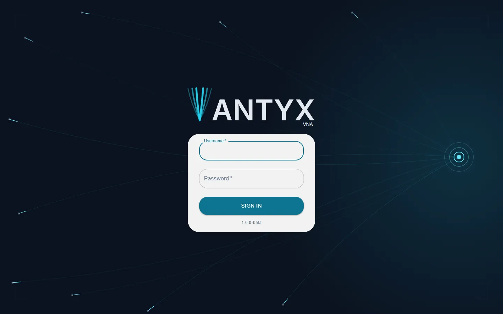
- เปิดเว็บไซต์ของระบบ ระบบจะพาไปหน้า Login
- กรอก Username และ Password (รหัสผ่านอย่างน้อย 6 ตัวอักษร — กรอกไม่ครบจะขึ้น “Username is required” / “Password must be at least 6 characters”)
- กด Sign in — ระบบพาไปหน้าแรกที่คุณมีสิทธิ์ ตามลำดับ Studies → Patients → VIP → Files → Import Dicom → Refer → Modality Worklist → Dashboard → Settings → Audit Logs → Favorites
- “User not found” = ชื่อผู้ใช้ผิด หรือบัญชีถูกปิดใช้งาน · “Wrong password…” = รหัสผ่านผิด ระบบแจ้งจำนวนครั้งที่เหลือ (“เหลือโอกาสกรอกรหัสผ่านผิดได้อีก N ครั้ง”)
- บัญชีที่ยังไม่ได้รับสิทธิ์หน้าใดเลยจะขึ้น “You do not have permission to access any page” — ติดต่อผู้ดูแล
- ถ้าเปิดจากลิงก์เปิดภาพ (Viewer URL) หรือลิงก์หน้าสแกนมือถือ หลัง Login ระบบจะพากลับไปที่ลิงก์นั้น ลิงก์หน้าอื่นจะไปหน้าแรกตามปกติ
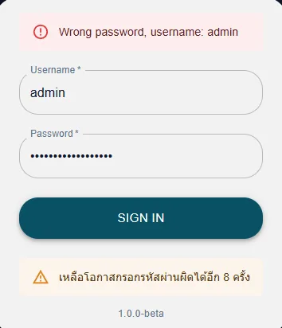
กรอกรหัสผ่านผิดได้ไม่เกิน 10 ครั้งใน 15 นาที ต่อชื่อผู้ใช้และ IP ของเครื่อง (นับจากครั้งแรกที่ผิด · ชื่อผู้ใช้ที่ไม่มีในระบบไม่นับ) เมื่อครบ ระบบจะล็อกชั่วคราว (“พยายามยืนยันตัวตนผิดครบจำนวนที่กำหนดแล้ว…”) ให้รอตามเวลาที่แจ้ง หรือให้ผู้ดูแลรีเซ็ตรหัสผ่าน (การรีเซ็ตจะปลดล็อกด้วย)
เข้าสู่ระบบบนมือถือ / แท็บเล็ต
บนมือถือและแท็บเล็ต หน้า Login จะมี 2 ปุ่ม ให้เลือกตามงาน
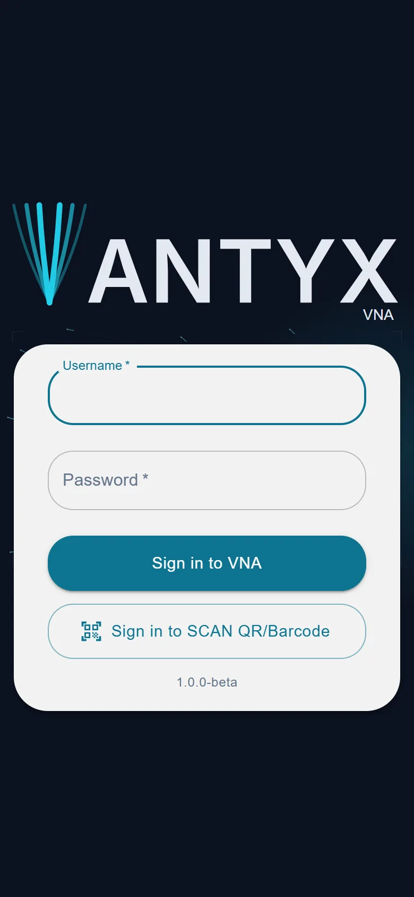
- Sign in to VNA — เข้าหน้าเว็บตามปกติ
- Sign in to SCAN QR/Barcode — ไปหน้าสแกน barcode ผู้ป่วยเพื่อถ่ายรูปเข้าระบบ (ดู หน้าสแกนผู้ป่วย) ต้องมีสิทธิ์ Studies › Upload from Mobile (QR)
ระยะเวลาการใช้งาน (Session)
- ระบบต่ออายุการเข้าใช้งานให้อัตโนมัติขณะใช้งาน หากไม่ได้ใช้งานต่อเนื่องเกิน 3 วัน ต้อง Login ใหม่ · ปิดเบราว์เซอร์ไม่ใช่การออกจากระบบ เปิดใหม่จะยังเข้าใช้ได้
- ถ้าผู้ดูแลปิดใช้งานหรือลบบัญชี ระบบจะออกจากระบบทันทีในครั้งถัดไปที่ต่ออายุ
- เมื่อผู้ดูแลเปลี่ยนสิทธิ์ของคุณ สิทธิ์ใหม่มีผลหลัง Login ใหม่ หรือภายใน 30 นาที
- เปิดหน้าที่ไม่มีสิทธิ์ ระบบจะแสดงหน้า 403 — Unauthorized (ไม่มีเมนู — กด Back) · URL ที่ไม่มีอยู่แสดง 404 — Page Not Found
- ถ้าเครือข่ายหลุด จะมีข้อความ “เชื่อมต่อเซิร์ฟเวอร์ไม่ได้ — ตรวจสอบเครือข่ายแล้วลองใหม่” · หลังระบบอัปเดตเวอร์ชัน หน้าเว็บจะโหลดใหม่เองหนึ่งครั้งเมื่อคลิกเมนู (ข้อมูลที่พิมพ์ค้างไว้อาจหาย)
ส่วนประกอบของหน้าจอ

| ส่วน | รายละเอียด |
|---|---|
| เมนูด้านซ้าย (Sidebar) | รายการหน้าที่มีสิทธิ์ หน้าที่เปิดอยู่จะเป็นตัวหนามีแถบสีด้านซ้าย · Favorites มีตัวเลขจำนวนรายการโปรด (สูงสุด “99+”) |
| ปุ่มย่อ/ขยายเมนู | ลูกศรซ้ายสุดของแถบบน (จอกว้างตั้งแต่ 1200 px) — ย่อเมนูเหลือแต่ไอคอน (ชี้ที่ไอคอนเพื่อดูชื่อ) ไอคอนเปลี่ยนเป็น ระบบจำค่าไว้ · จอแคบกว่านั้น (แท็บเล็ต/มือถือ) จะเป็นปุ่ม เปิดเมนูแบบเลื่อนออก และบนมือถือจะซ่อนชื่อหน้ากับชื่อผู้ใช้ |
| ชื่อหน้า | ชื่อหน้าที่เปิดอยู่ |
| Location / Department | เลือกสถานที่และแผนกที่กำลังทำงาน (แสดงเมื่อสังกัดมากกว่า 1) — ดูหัวข้อถัดไป |
| ไอคอนข้อความ | เปิด/ซ่อนหน้าต่างแชท (ต้องมีสิทธิ์ Messaging) ตัวเลขสีส้ม = ข้อความที่ยังไม่อ่าน (สูงสุด “99+”) |
| / ไอคอนดวงอาทิตย์/พระจันทร์ | สลับธีมสว่าง / มืด (ค่าเริ่มต้นคือมืด) — ไอคอนแสดงธีมที่จะสลับไป ชี้เมาส์เห็น “Switch to Light” / “Switch to Dark” ระบบจำค่าไว้ในเบราว์เซอร์ |
| รูปโปรไฟล์ + ชื่อ | เมนูบัญชี: Update Profile, Change Password, Sign Out |
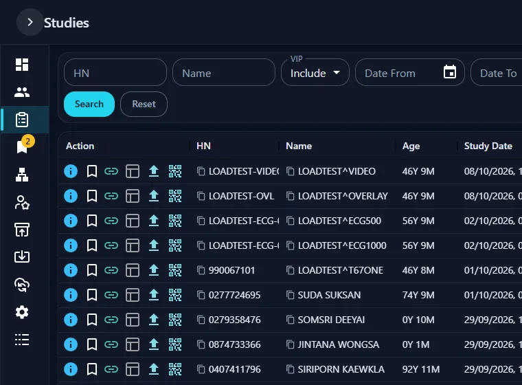
เลือกสถานที่และแผนกที่ทำงาน
ผู้ใช้ที่สังกัดหลายสถานที่ (Location) หรือหลายแผนก (Department) จะเห็นช่องเลือกที่แถบด้านบน ใช้กำหนดว่าขณะนี้ทำงานในนามแผนกใด เช่น ตอนอัปโหลดไฟล์ ไฟล์จะเป็นของแผนกที่เลือก
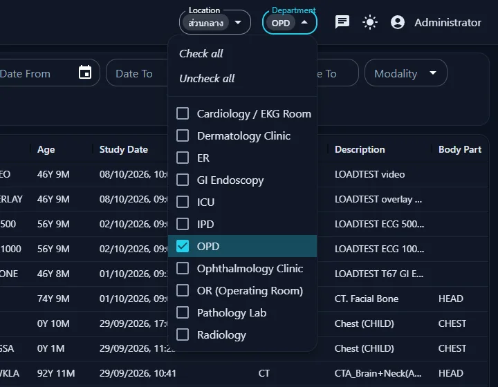
- ช่อง Location (แสดงรหัสสถานที่) และ Department เลือกได้หลายรายการ แต่ละช่องมีปุ่ม Check all / Uncheck all — ช่องแสดงชิปไม่เกิน 2 รายการ ถ้าเกินจะแสดง “N selected” ไม่เลือกเลยแสดง “No location selected” / “No department selected”
- รายชื่อแผนกแสดงเฉพาะแผนกของสถานที่ที่ติ๊ก จัดกลุ่มตามสถานที่ (แผนกที่ไม่มีสถานที่อยู่ในกลุ่ม “No location” ท้ายรายการ) · เอาสถานที่ออก แผนกของสถานที่นั้นจะถูกเอาออกด้วย
- ค่าที่เลือกบันทึกไว้ที่เซิร์ฟเวอร์ต่อผู้ใช้ — เปิดจากเครื่องอื่นก็ได้ค่าเดิม (บันทึกไม่สำเร็จจะคืนค่าเดิมพร้อมข้อความ “Failed to update … selection”)
- ติ๊กแผนกไว้ 1 แผนก = การอัปโหลดใช้แผนกนั้นทันที · ติ๊กตั้งแต่ 2 แผนก = หน้าต่างอัปโหลดไฟล์ Import Dicom และ QR มือถือจะให้เลือกแผนกก่อน · ไม่ได้ติ๊กเลย = อัปโหลดไม่ได้ (ระบบแจ้ง “No department is currently active…”)
- ช่องนี้ไม่ได้กรองรายการ Studies — รายการการตรวจถูกกำหนดโดยขอบเขตแผนก (AE Title) ที่เซิร์ฟเวอร์
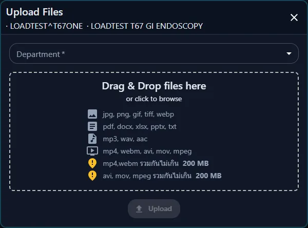
แก้ไขโปรไฟล์ (Update Profile)
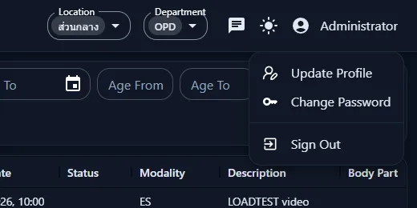
- คลิกรูปโปรไฟล์ มุมขวาบน → Update Profile
- เปลี่ยนรูป: กด เปลี่ยนรูป เลือกไฟล์รูปภาพ (JPEG, PNG, WebP, GIF, BMP, TIFF, AVIF, HEIC) ไม่เกิน 5 MB — ระบบตรวจชนิดไฟล์จริง ตัดเป็นสี่เหลี่ยมจัตุรัสกลางภาพ และมีผลทันทีไม่ต้องกดบันทึก · กด ลบรูป (แสดงเมื่อมีรูป) เพื่อกลับเป็นไอคอนเริ่มต้น
- แก้ ชื่อ-นามสกุล (ไม่เกิน 150 ตัวอักษร) แล้วกด บันทึก (กดได้เมื่อชื่อเปลี่ยน)
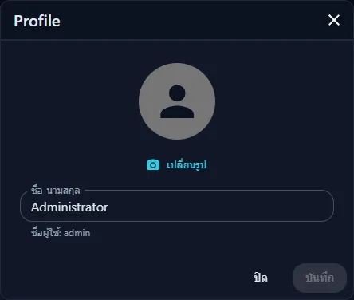
เปลี่ยนรหัสผ่าน (Change Password)
- เมนูบัญชี → Change Password
- กรอก Current Password, New Password (อย่างน้อย 6 ตัวอักษร) และ Confirm Password ให้ตรงกัน
- กด Update Password (กด Enter ไม่ส่ง) — สำเร็จจะขึ้นข้อความสีเขียวและปิดหน้าต่างเองใน 3 วินาที · ผิดพลาดจะขึ้นข้อความสีส้ม เช่น “Please fill in all fields.”, “New password and confirm password do not match.”, “Wrong current password, please try again.”
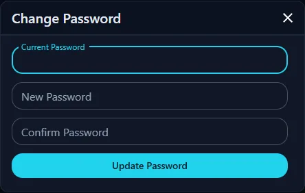
กรอกรหัสผ่านปัจจุบันผิดนับรวมกับโควตาการกรอกผิดของหน้า Login (10 ครั้ง / 15 นาที)
ออกจากระบบ (Sign Out)
เมนูบัญชี → Sign Out ระบบจะยกเลิก session ที่เซิร์ฟเวอร์และกลับไปหน้า Login · ควรออกจากระบบทุกครั้งเมื่อใช้เครื่องส่วนกลาง เพราะการปิดเบราว์เซอร์ไม่ได้ออกจากระบบ · ถ้าเครือข่ายหลุดขณะกด Sign Out ระบบจะยังไม่ออกจากระบบ ให้ลองใหม่เมื่อเชื่อมต่อได้
เริ่มต้น
การค้นหาและตารางข้อมูล
กติกาที่ใช้เหมือนกันทุกหน้า: ช่องค้นหา ช่วงวันที่ ตารางข้อมูล ข้อความแจ้งเตือน และหน้าต่าง (dialog)
ช่องค้นหาข้อความ
- ช่องค้นหาข้อความอิสระในหน้า Studies, Patients และทุกแท็บของ Files (HN, Name, File Name, Note, Study Description) ต้องพิมพ์อย่างน้อย 3 ตัวอักษร ถ้าน้อยกว่าจะขึ้น “<ชื่อช่อง> ต้องมีอย่างน้อย 3 ตัวอักษร” และยังไม่ค้น (หน้า VIP, Favorites, Worklist, Refer, Audit ไม่มีกติกานี้)
- HN ค้นแบบตรงตัว (ต้องพิมพ์ครบ) ส่วนชื่อ ชื่อไฟล์ และคำอธิบาย ค้นแบบ “มีคำนี้อยู่” ไม่สนตัวพิมพ์เล็ก-ใหญ่
- กด Search หรือ Enter เพื่อค้น · กด Reset เพื่อล้างเงื่อนไขทั้งหมด
- หน้า Settings ช่อง Search... จะค้นเมื่อกด Enter เท่านั้น
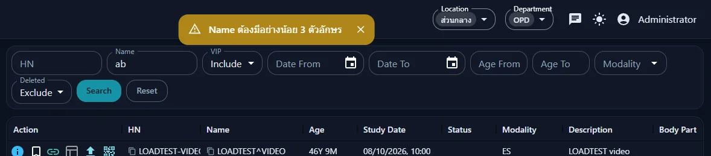
ช่วงวันที่ (Date From / Date To)
- รูปแบบวันที่ วว/ดด/ปปปป (ค.ศ.) ปฏิทินมีปุ่ม Clear และ Today
- เลือก Date From แล้ว ระบบเติม Date To เป็นวันเดียวกันให้ · ถ้าเลือก From หลัง To (หรือ To ก่อน From) ระบบจะปรับอีกช่องให้เป็นวันเดียวกัน (ไม่สลับ) — ตรวจช่วงอีกครั้งก่อนกด Search
- หน้า Studies, Patients, VIP, Worklist, Refer, Audit ต้องมีทั้งสองช่อง ถ้ามีช่องเดียวจะขึ้น “Invalid Date, must contain both dateFrom and dateTo” (แท็บในหน้า Files ใส่ช่องเดียวได้)
- ช่วงอายุ (Age From / Age To, 0–150): พิมพ์ Age From แล้ว Age To ถูกเติมเป็นค่าเดียวกัน ต้องมีทั้งสองช่องและ From ≤ To (“Invalid Age…”)
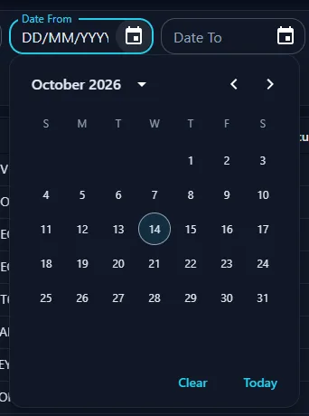
ค่าย้อนหลังเริ่มต้น — ถ้าไม่ระบุวันที่ หลายหน้า (Studies, VIP, Files, Refer › History) จะแสดงเฉพาะข้อมูลย้อนหลังตามจำนวนวันที่ผู้ดูแลตั้งไว้ (DEFAULT_DATE 1–3650 วัน)
ถ้าค้นด้วย HN ในหน้า Studies ระบบจะแสดงการตรวจของผู้ป่วยทุกช่วงเวลา · หน้า Audit Logs ย้อนหลัง 14 วัน
ตารางข้อมูล
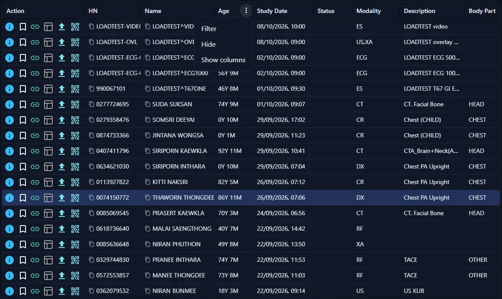
- เลือกจำนวนแถวต่อหน้า 25 / 50 / 100 ที่มุมล่างของตาราง (ค่าเริ่มต้น 25 ไม่จำค่า) · ปุ่ม First / ก่อนหน้า / ถัดไป / Last และจำนวนแถวทั้งหมด · เปลี่ยนหน้าแล้วแถวที่ติ๊กไว้จะถูกยกเลิก
- เมนูของหัวคอลัมน์ (ชี้เมาส์ที่หัวคอลัมน์ → ⋮) มี Filter, Hide และ Show columns — Filter ทำงานเฉพาะแถวในหน้าที่แสดงอยู่ ไม่ใช่ผลค้นหาทั้งหมด ถ้าต้องการกรองทั้งชุดให้ใช้ตัวกรองด้านบน
- คอลัมน์ที่ซ่อนไว้ระบบจำแยกตามหน้าในเบราว์เซอร์เครื่องนั้น (ไม่ติดตามบัญชีผู้ใช้ — เครื่องส่วนกลางทุกคนเห็นเหมือนกัน)
- ไอคอน คัดลอก หน้า HN และชื่อ — คลิกเพื่อคัดลอก (ขึ้น “Copied!”)
- ไอคอนในคอลัมน์ Action แสดงเฉพาะปุ่มที่คุณมีสิทธิ์ ชี้เมาส์ค้างเพื่อดูชื่อปุ่ม
- แถวสีเหลืองอ่อน (ธีมสว่าง) / สีน้ำเงินเข้ม (ธีมมืด) ในหน้า Studies และ Favorites = การตรวจ VIP
- ขณะโหลดจะมีแถบความคืบหน้าบนตาราง · ถ้าโหลดไม่สำเร็จจะแสดงข้อความ “Error: …” แทนตาราง
ข้อความแจ้งเตือนและหน้าต่าง
- ผลการทำงาน (สำเร็จ / ผิดพลาด / คำเตือน) แสดงเป็นแถบข้อความ (snackbar) ที่กลางด้านบนของจอ หายเองใน 3–5 วินาที หรือกด ✕
- หน้าต่าง (dialog) ส่วนใหญ่ไม่ปิดเมื่อคลิกนอกกรอบหรือกด Esc เพื่อกันข้อมูลที่กรอกหาย — ปิดด้วยปุ่ม มุมขวาบน หรือ Cancel
- งานที่ย้อนกลับไม่ได้ (ลบถาวร รวมการตรวจ) ต้องพิมพ์คำยืนยัน เช่น
DELETEหรือMERGEและระบุเหตุผล - ทุกการกระทำสำคัญถูกบันทึกใน Audit Logs
งานภาพและผู้ป่วย
Dashboard
ภาพรวมปริมาณการตรวจของทั้งระบบ แยกตามช่วงเวลา ชนิดเครื่อง และแหล่งที่มา พร้อมสถานะพื้นที่จัดเก็บภาพ
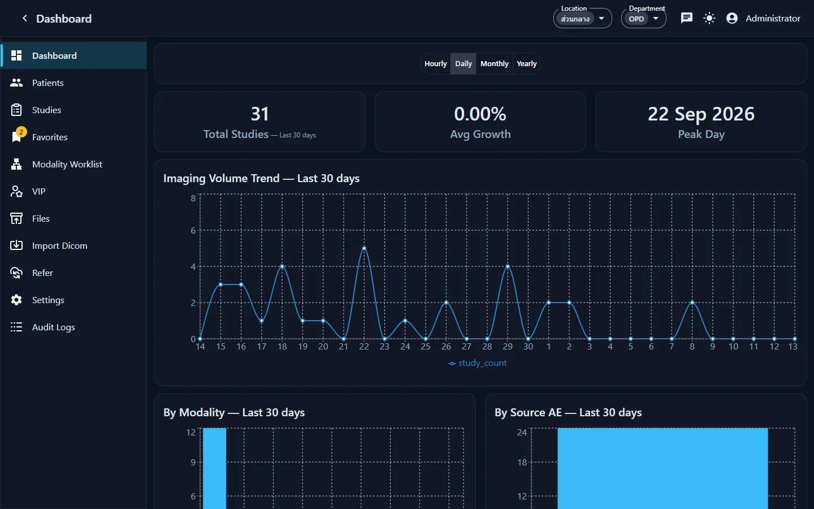
เลือกช่วงเวลา
ปุ่มด้านบนเลือกความละเอียดของข้อมูล (เวลาเป็นเวลาประเทศไทย · เปิดหน้าใหม่จะกลับเป็น Daily):
| ปุ่ม | ช่วงที่แสดง |
|---|---|
| Hourly | วันนี้ (Today) รายชั่วโมง |
| Daily (ค่าเริ่มต้น) | 30 วันล่าสุด รายวัน |
| Monthly | 12 เดือนล่าสุด รายเดือน |
| Yearly | 5 ปีล่าสุด รายปี |
การ์ดและกราฟ
- Total Studies — จำนวนการตรวจในช่วงที่เลือก
- Avg Growth — ค่าเฉลี่ยของอัตราเติบโต (%) ระหว่างแต่ละช่วงย่อย (ทศนิยม 2 ตำแหน่ง) ลูกศร เขียวขึ้น / แดงลง (0% ไม่มีลูกศร)
- Peak Hour / Day / Month / Year — ช่วงที่มีการตรวจมากที่สุด
- Imaging Volume Trend — กราฟเส้นแนวโน้มจำนวนการตรวจ
- By Modality และ By Source AE — กราฟแท่งแยกตามชนิดเครื่องและเครื่องที่ส่งภาพ
พื้นที่จัดเก็บ (Hot / Cold Storage)
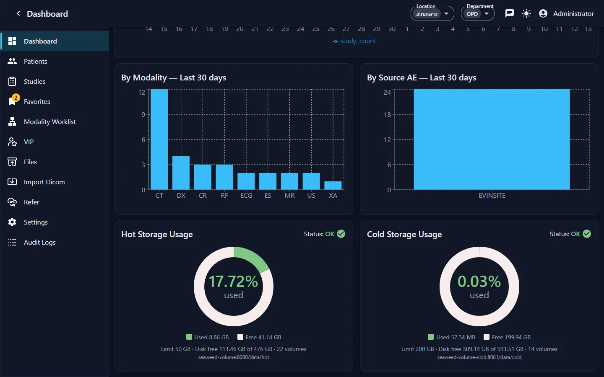
- Hot = ดิสก์เร็วสำหรับภาพใหม่ · Cold = ดิสก์ความจุสูงสำหรับภาพเก่า (ระบบย้ายให้อัตโนมัติเมื่อผู้ดูแลเปิดไว้)
- กราฟวงกลมแสดง Used / Free และ % ที่ใช้ตรงกลาง · บรรทัด Status: OK · WARNING เมื่อใช้เกิน 70% · CRITICAL เมื่อเกิน 90%
- ใต้กราฟแสดง Limit, พื้นที่ว่างของดิสก์ (แยกรายดิสก์เมื่อ tier นั้นมีหลายดิสก์) และจำนวน volume · ข้อความ “ไม่มี volume server ของ tier นี้” แปลว่า tier นั้นไม่ได้ตั้งไว้ หรือติดต่อระบบจัดเก็บไม่ได้ชั่วคราว
ตัวเลขเป็นของทั้งระบบ ไม่กรองตามแผนกที่เลือก · หน้านี้ไม่รีเฟรชเอง — ข้อมูลกราฟเก็บไว้ 1 นาที ข้อมูลพื้นที่จัดเก็บราว 10 นาที ต้องการตัวเลขล่าสุดให้เปิดหน้าใหม่ (F5) หรือสลับช่วงเวลา
งานภาพและผู้ป่วย
Patients — ผู้ป่วย
ค้นหาผู้ป่วยทั้งโรงพยาบาล ดูจำนวนการตรวจ แก้ไขข้อมูลผู้ป่วย ลงทะเบียนผู้ป่วยใหม่ และรวมผู้ป่วยที่ซ้ำกัน
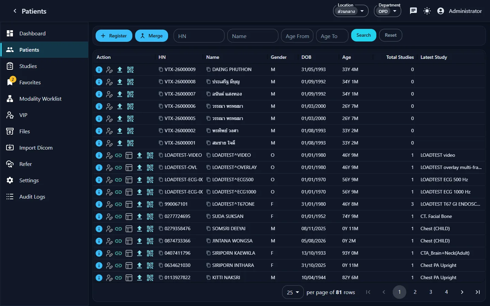
ค้นหาผู้ป่วย
- ตัวกรอง: HN (ตรงตัว ค้นได้ทุก HN ของผู้ป่วย), Name (บางส่วนของชื่อ) — อย่างน้อย 3 ตัวอักษร, Age From / Age To (อายุปัจจุบัน 0–150 ต้องกรอกทั้งสองช่อง พิมพ์ From แล้ว To ถูกเติมให้) แล้วกด Search · Reset ล้างตัวกรอง
- คอลัมน์: HN, Name, Gender, DOB, Age, Total Studies (จำนวนการตรวจ), Latest Study (การตรวจล่าสุด)
- ดับเบิลคลิกที่ HN หรือชื่อ = เปิดภาพการตรวจล่าสุดใน Viewer (เฉพาะผู้ป่วยที่มีการตรวจ)
ปุ่มในคอลัมน์ Action
| ปุ่ม (ชื่อเมื่อชี้เมาส์) | ทำอะไร | สิทธิ์ |
|---|---|---|
| Open Study Detail | เปิดรายละเอียดการตรวจล่าสุดของผู้ป่วย (ผู้ป่วยที่ยังไม่มีการตรวจจะเห็นเฉพาะส่วน Un-mapped Files) | Studies › Open Study Detail |
| Edit Patient | แก้ไข HN / ชื่อ / เพศ / วันเกิด (ใช้ได้แม้ผู้ป่วยยังไม่มีการตรวจ) | Patients › Edit Patient |
| Click to copy Viewer URL | คัดลอกลิงก์เปิดภาพการตรวจล่าสุด | Studies › Open Viewer |
| Open Viewer | เปิดภาพการตรวจล่าสุด | Studies › Open Viewer |
| Upload Files | อัปโหลดไฟล์เข้าการตรวจล่าสุดของผู้ป่วย (ถ้ายังไม่มีการตรวจ ไฟล์จะเป็นระดับผู้ป่วยใน Un-mapped Files) | Studies › Upload Files |
| Upload from Mobile | ออก QR ให้มือถือถ่ายรูปเข้าระดับผู้ป่วย (แชร์ถึงแผนกอื่นได้) | Studies › Upload from Mobile (QR) |
| Export | ดาวน์โหลดการตรวจล่าสุดเป็น zip | Studies › Export Study |
ปุ่ม Copy Viewer URL, Open Viewer และ Export แสดงเฉพาะผู้ป่วยที่มีการตรวจอย่างน้อย 1 รายการ · ปุ่มอื่นแสดงทุกแถว
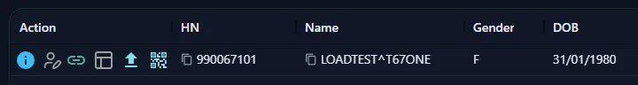
แก้ไขข้อมูลผู้ป่วย (Edit Patient)
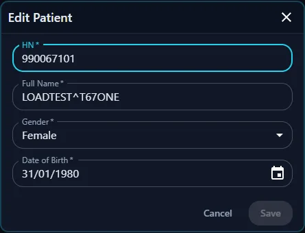
- กดไอคอน Edit Patient ที่แถวผู้ป่วย
- แก้ HN (ไม่เกิน 50 ตัวอักษร), Full Name (ไม่เกิน 255), Gender (Male / Female / Other), Date of Birth — เมื่อออกจากช่อง HN ระบบตรวจว่าซ้ำหรือไม่ (ซ้ำจะขึ้น “HN already exist”)
- กด Save (กดได้เมื่อกรอกครบทุกช่อง มีการเปลี่ยนแปลง และ HN ไม่ซ้ำ) — ระบบแจ้ง “Patient updated — HN: … (N studies)” · ไม่สำเร็จจะขึ้น “Update failed: …” · Cancel ปิดโดยไม่บันทึก
- การแก้ไขมีผลกับข้อมูลผู้ป่วยและการตรวจทุกรายการของผู้ป่วยในฐานข้อมูล Vantyx แต่ไม่แก้ tag ในไฟล์ DICOM — หน้าดู DICOM tag ข้อความบนภาพใน Viewer และไฟล์ .dcm ที่ Export ยังเป็นค่าเดิม (ใช้ Tag Morphing ดึงค่าใหม่จากฐานข้อมูลตอนส่งออกได้)
- ภาพใหม่ที่ส่งมาด้วย HN เก่าจะไม่จับคู่กับผู้ป่วยที่แก้ HN แล้ว
- ทุกการแก้ไขบันทึกค่าก่อน/หลังใน Audit Logs
ลงทะเบียนผู้ป่วยใหม่ (Register)
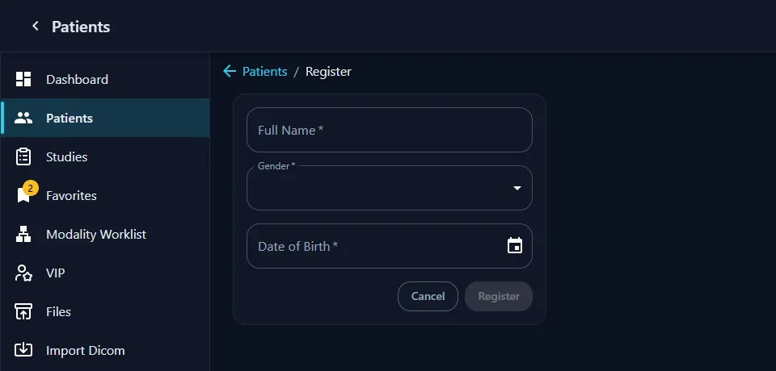
- หน้า Patients → กด Register (สิทธิ์ Patients › Create Patient)
- กรอก Full Name, Gender, Date of Birth (ปุ่ม Register กดได้เมื่อครบทั้ง 3 ช่อง · Cancel กลับหน้า Patients)
- กด Register — ระบบออก HN ให้อัตโนมัติรูปแบบ
VTX-ปปNNNNNNแสดงในข้อความ “Patient registered — HN: …” จด HN ไว้ทันที (ข้อความหายเอง) แล้วล้างฟอร์มให้ลงทะเบียนคนถัดไปได้
ใช้เมื่อต้องเก็บเอกสารหรือภาพของผู้ป่วยที่ยังไม่มี HN จาก HIS — ภายหลังรวมกับผู้ป่วยจาก HIS ได้ด้วย Merge
รวมผู้ป่วยซ้ำ (Merge)
ใช้เมื่อผู้ป่วยคนเดียวมีหลายระเบียน (เช่น ลงทะเบียนซ้ำ HN ต่างกัน) — สิทธิ์ Patients › Merge Patient
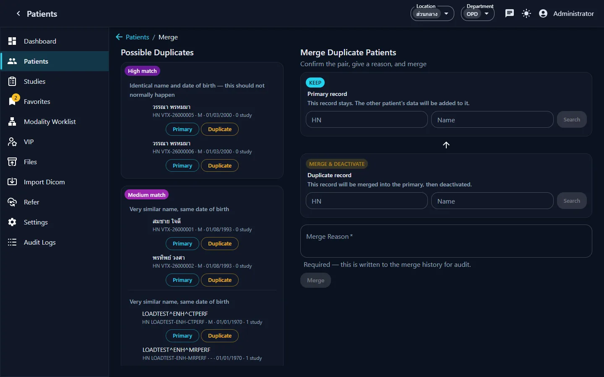
- หน้า Patients → กด Merge
- ฝั่งซ้าย Possible Duplicates แสดงคู่ที่อาจเป็นคนเดียวกัน (สูงสุด 100 คู่ที่คล้ายที่สุด แต่ละการ์ดบอก HN · เพศ · วันเกิด · จำนวนการตรวจ) จัดกลุ่ม High / Medium / Low match พร้อมเหตุผล — กด Primary หรือ Duplicate เพื่อเติมลงฟอร์มด้านขวา หรือค้นเองด้วย HN / Name (พบหลายคนจะให้เลือก 1 คน · เปลี่ยนด้วยปุ่ม Change) · ไม่มีคู่ที่สงสัยจะขึ้น “No possible duplicates found right now.”
- Primary record (KEEP) = ระเบียนที่เก็บไว้ · Duplicate record (MERGE & DEACTIVATE) = ระเบียนที่จะถูกรวมแล้วปิดใช้งาน
- กรอก Merge Reason (บังคับ บันทึกเป็นประวัติ) แล้วกด Merge
- ตรวจสรุปในหน้าต่างยืนยัน “Confirm Merge — This cannot be undone.” (“<ชื่อ> (HN …) will be deactivated and merged into <ชื่อ> (HN …)”) แล้วกด Merge อีกครั้ง — สำเร็จจะขึ้น “Patients merged successfully” และล้างฟอร์มให้รวมคู่ถัดไป · เลือกคนเดียวกันทั้งสองฝั่งจะขึ้น “Primary and Duplicate cannot be the same patient.”
การรวมผู้ป่วยย้อนกลับไม่ได้ — ตรวจ HN ชื่อ วันเกิด และจำนวนการตรวจของทั้งสองฝั่งให้แน่ใจก่อนยืนยัน
งานภาพและผู้ป่วย
Studies — รายการการตรวจ
หน้าหลักสำหรับค้นหาการตรวจ เปิดภาพ ดูรายละเอียด บันทึกเป็นรายการโปรด อัปโหลดไฟล์แนบ และส่งออกเป็น zip
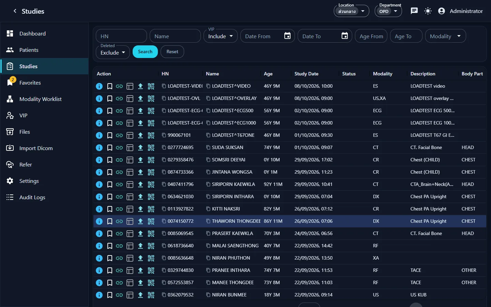
ตัวกรอง
| ตัวกรอง | รายละเอียด |
|---|---|
| HN / Name | อย่างน้อย 3 ตัวอักษร (HN ตรงตัว · Name บางส่วน) · ค้นด้วย HN จะเห็นการตรวจทุกช่วงเวลาของผู้ป่วย |
| VIP | Include (ค่าเริ่มต้น — รวม VIP ที่คุณเห็นได้) / Only (เฉพาะ VIP) |
| Date From / Date To | ช่วงวันที่ตรวจ (ต้องกรอกทั้งสองช่อง เลือก From แล้วระบบเติม To ให้ · ปฏิทินมีปุ่ม Clear / Today) — ถ้าไม่ระบุ แสดงย้อนหลังตามค่า DEFAULT_DATE |
| Age From / Age To | อายุ ณ วันที่ตรวจ (ต้องกรอกทั้งสองช่อง From ≤ To · พิมพ์ From แล้ว To ถูกเติมให้) |
| Modality | เลือกได้หลายชนิด เช่น CR, DX, CT, MR, US, MG, NM, PT, ECG, ES, RF, XA, OT … |
| Deleted | Exclude (ค่าเริ่มต้น) / Include / Only — เห็นเฉพาะผู้มีสิทธิ์ลบหรือกู้คืนการตรวจ ใช้หาการตรวจที่ถูกลบเพื่อกู้คืน |
กด Search เพื่อค้น · Reset ล้างตัวกรองทั้งหมด
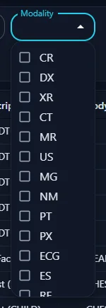
คอลัมน์ในตาราง
HN และ Name (มีปุ่ม คัดลอก), Age (อายุ ณ วันตรวจ), Study Date, Status (ชิปสีแดง Deleted — เห็นเฉพาะผู้มีสิทธิ์ลบ), Modality, Description, Body Part, Institution, Source (เครื่อง/AE ที่ส่งภาพ), Serie/Instance
ดับเบิลคลิกที่แถว (HN, ชื่อ, อายุ, วันที่, modality, คำอธิบาย) เพื่อเปิดภาพใน Viewer ได้ทันที
ปุ่มในคอลัมน์ Action
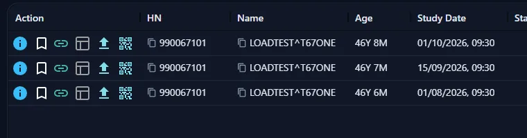
| # | ปุ่ม | ทำอะไร | สิทธิ์ |
|---|---|---|---|
| 1 | Open Study Detail | เปิด รายละเอียดการตรวจ | Studies › Open Study Detail |
| 2 | / Add / Remove Favorites | เพิ่ม/เอาออกจาก รายการโปรด | Favorites |
| 3 | Click to copy Viewer URL | คัดลอกลิงก์เปิดภาพ ส่งให้เพื่อนร่วมงาน (ผู้รับต้อง Login และมีสิทธิ์) | Studies › Open Viewer |
| 4 | Open Viewer | เปิดภาพในหน้าต่าง Viewer (เปิดที่จอที่ 2 ถ้ามี) | Studies › Open Viewer |
| 5 | Upload Files | อัปโหลดไฟล์แนบเข้าการตรวจ | Studies › Upload Files |
| 6 | Upload from Mobile | ออก QR ให้มือถือถ่ายรูปเข้าการตรวจนี้ | Studies › Upload from Mobile (QR) |
| 7 | Export | ดาวน์โหลดการตรวจเป็น zip | Studies › Export Study |
การลบ / รวม / กู้คืนการตรวจทำที่หน้า Study Details เท่านั้น · กลับจากหน้ารายละเอียดด้วยลิงก์ “← Studies” ตัวกรองและหน้าเดิมจะยังอยู่
ส่งออกการตรวจ (Export Study)
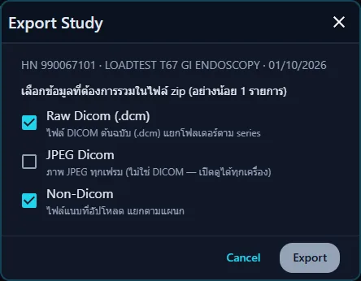
- กดไอคอน Export (หน้า Studies, Favorites, Patients หรือ Study Details)
- เลือกอย่างน้อย 1 รายการ:
- Raw Dicom (.dcm) — ไฟล์ DICOM ต้นฉบับ แยกโฟลเดอร์ตาม series (เลือกไว้แล้ว — ไม่เลือกอะไรเลยปุ่ม Export จะกดไม่ได้)
- JPEG Dicom — ภาพ JPEG ทุกเฟรม เปิดดูได้ทุกเครื่องโดยไม่ต้องมีโปรแกรม DICOM
- Non-Dicom — ไฟล์แนบ แยกโฟลเดอร์ตามแผนก (เลือกไว้แล้วถ้าการตรวจมีไฟล์แนบ · ไม่มีไฟล์แนบจะกดไม่ได้ “ไม่มีไฟล์ Non-DICOM ใน study นี้” · วิดีโอที่กำลังแปลงไฟล์อยู่ทั้งหมดก็ยังเลือกไม่ได้)
- กด Export — ระบบแจ้ง “เริ่มดาวน์โหลดแล้ว” ดูความคืบหน้าที่แถบดาวน์โหลดของเบราว์เซอร์ (ไม่สำเร็จจะขึ้น “Export failed: …”)
ไฟล์ชื่อ HN<hn>_<คำอธิบาย>_<วว-ดด-ปปปป>.zip ภายในมีโฟลเดอร์ Raw Dicom/, JPEG Dicom/, Non-Dicom/<แผนก>/
ไฟล์ที่ส่งออกมีข้อมูลผู้ป่วย — เก็บและส่งต่อตามนโยบายคุ้มครองข้อมูลส่วนบุคคลของโรงพยาบาล · ถ้าผู้ดูแลตั้ง Tag Morphing ไว้ ไฟล์ DICOM ที่ส่งออกจะถูกปรับ tag ตามกติกา
งานภาพและผู้ป่วย
Study Details — รายละเอียดการตรวจ
แสดงประวัติการตรวจทั้งหมดของผู้ป่วย series ภาพ ไฟล์แนบของแต่ละการตรวจ และเป็นที่สำหรับลบ รวม หรือกู้คืนการตรวจ
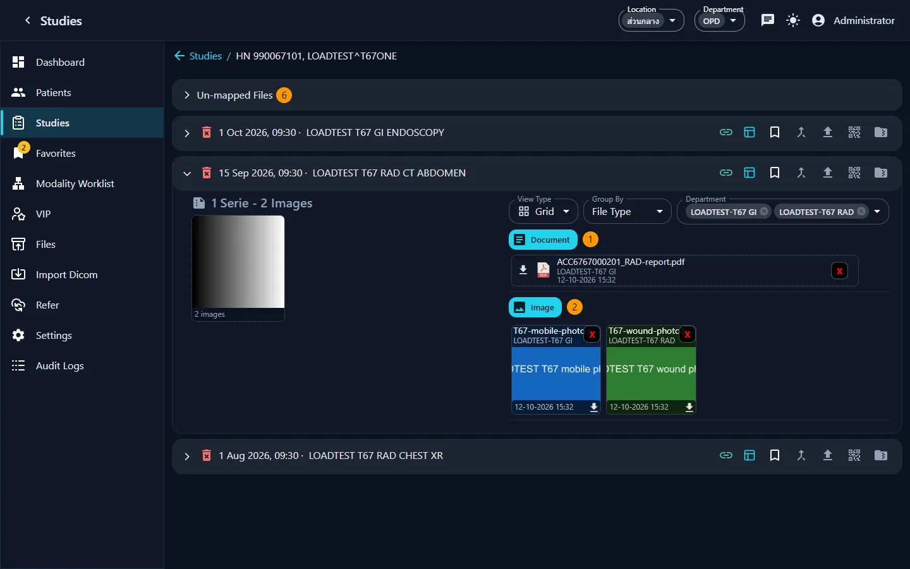
ส่วนประกอบของหน้า
- บรรทัดบนสุด: ลิงก์กลับ (← Studies / Patients / Favorites) และ HN, ชื่อผู้ป่วย
- รายการการตรวจของผู้ป่วยเรียงตามวันที่ แต่ละรายการเป็นแถบกางได้ หัวแถบแสดง วันที่ · คำอธิบาย
- ไอคอนบนหัวแถบ: Delete Study (ซ้าย), คัดลอกลิงก์ Viewer, Open Viewer, Favorite (กดแล้วเป็น Unfavorite), Merge (เมื่อประวัติผู้ป่วยมีมากกว่า 1 รายการ), Upload, Mobile Upload, Export
- เนื้อหาด้านซ้าย: “N Series - N Images” และภาพย่อของแต่ละ series (เรียงเหมือนแถบข้างของ Viewer: ภาพก่อน ตามด้วย series สรุป เช่น PDF Report / SR / ECG / Video (บอกความยาว) / SEG / RTSTRUCT · ไม่มีภาพย่อจะขึ้น “No preview”) — คลิกภาพย่อเพื่อเปิด Viewer ของการตรวจนี้
- เนื้อหาด้านขวา: ไฟล์แนบ (Non-DICOM) ของการตรวจ
ดู DICOM Metadata
กดไอคอน View Metadata หน้า “N Series - N Images” เพื่อดู Study DICOM Tags ระดับการตรวจ และตาราง Series (N) (Series Number, Series Description, Modality, # Instances) — คลิก หน้าแถว series เพื่อกางดู DICOM tag ของ series นั้น
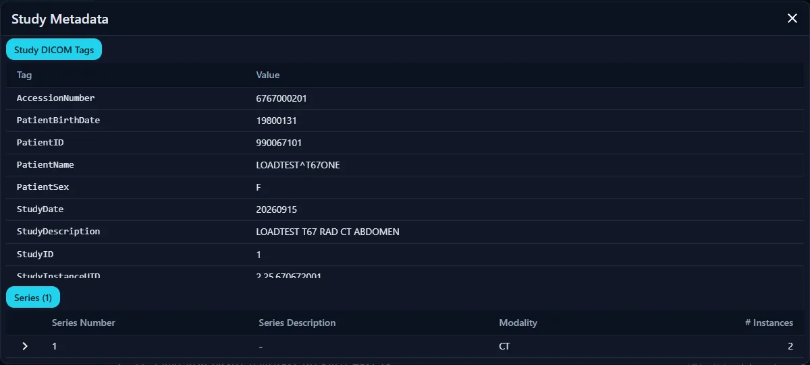
ไฟล์แนบของการตรวจ
- View Type: Grid (ภาพย่อ) / List (แบบไทม์ไลน์ แสดงเวลาเมื่อจัดกลุ่มตามวันที่) · Group By: File Type / Date / Department · Department: เลือกแผนกที่จะแสดง (อย่างน้อย 1 — เอาออกหมดจะขึ้น “Please select at least one department.” เลือกเกิน 2 แสดง “N selected”)
- แบบ Grid + File Type จัดกลุ่มเป็น Document, Image, Video, Audio · คลิกเพื่อเปิดดูตัวอย่าง (รูป, PDF, Word, Excel, PowerPoint, ข้อความ, เสียง และวิดีโอเปิดดูในหน้าเดียว) · ไอคอน Download เพื่อดาวน์โหลด (เห็นเฉพาะผู้มี Studies › Export Study)
- ปุ่ม X สีแดง = ลบไฟล์ (สิทธิ์ Studies › Delete Files — ยืนยัน “Confirm to delete <ไฟล์> ?”) ลบได้เฉพาะไฟล์ของแผนกตัวเอง — ไฟล์ไปอยู่ถังขยะ กู้คืนได้ที่ Files › Search Non-Dicom ภายใน 90 วัน
- ใครเปิดการตรวจนี้ได้ จะเห็นไฟล์แนบของการตรวจครบ ไม่ว่าแผนกใดเป็นผู้แนบ
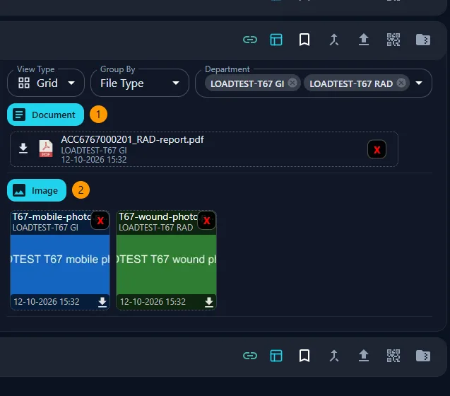
อัปโหลดไฟล์เข้าการตรวจ
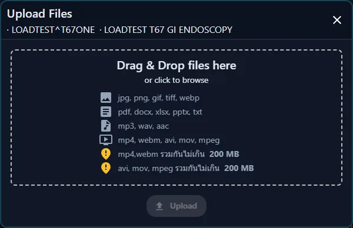
- กดไอคอน Upload ที่หัวแถบการตรวจ (หรือ Upload Files ในหน้า Studies)
- ถ้าคุณมีหลายแผนกที่เลือกไว้ ให้เลือก Department ที่เป็นเจ้าของไฟล์
- ลากไฟล์มาวาง หรือคลิกเพื่อเลือกไฟล์ (เอาไฟล์ออกจากรายการด้วย ) แล้วกด Upload — ระหว่างอัปโหลดมีแถบความคืบหน้าและปุ่ม Cancel · สำเร็จจะขึ้น “Uploaded successfully”
| ประเภท | นามสกุลที่รับ |
|---|---|
| รูปภาพ | jpg, png, gif, tiff, webp |
| เอกสาร | pdf, docx, xlsx, pptx, txt |
| เสียง | mp3, wav, aac |
| วิดีโอ | mp4, webm (รวมกันไม่เกิน 200 MB) · avi, mov, mpeg (รวมกันไม่เกิน 200 MB — ระบบแปลงเป็น mp4 ให้) |
ระบบตรวจชนิดไฟล์จากเนื้อไฟล์จริง ไม่ใช่นามสกุล — เปลี่ยนชื่อนามสกุลไฟล์ที่ไม่รองรับ (เช่น HEIC, zip) จะอัปโหลดไม่ได้ (“Not allowed file type: …”) · วิดีโอ avi / mov / mpeg จะแสดงสถานะ “กำลังแปลงไฟล์” จนกว่าจะเป็น mp4
ไฟล์ที่ยังไม่ผูกการตรวจ (Un-mapped Files)
ถ้าผู้ป่วยมีไฟล์ระดับผู้ป่วย (ยังไม่ผูกการตรวจ) จะมีแถบ Un-mapped Files พร้อมตัวเลขสีส้มด้านบน แสดง File Name, Department, Shared To, Timestamp
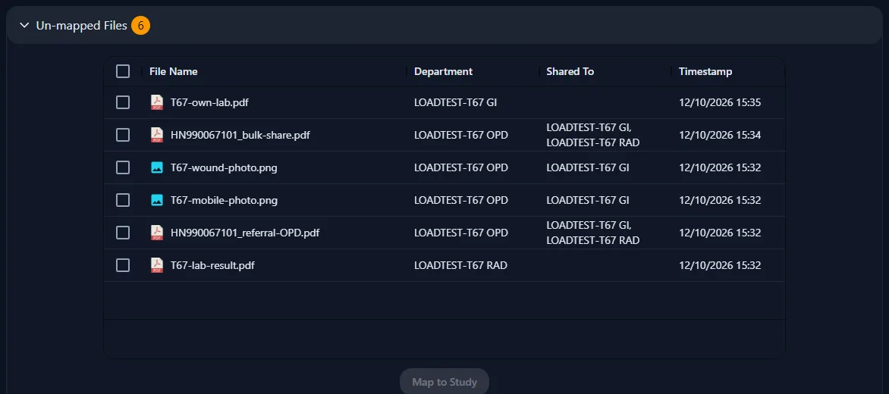
- ติ๊กไฟล์ที่ต้องการ (ไฟล์ที่แผนกอื่นแชร์มาเลือกไม่ได้ — ดูได้อย่างเดียว) · คลิกชื่อไฟล์เพื่อเปิดดู (เสียง/วิดีโอเล่นในแถว)
- กด Map to Study (สิทธิ์ Studies › Map Files to Study) เลือกการตรวจปลายทาง 1 รายการ (เฉพาะการตรวจในขอบเขตของคุณที่ยังไม่ถูกลบ — ถ้าผู้ป่วยมีการตรวจเดียวระบบเลือกให้)
- กดปุ่มยืนยัน “Map to <การตรวจ> · <วันที่>” — สำเร็จจะขึ้น “Mapped to study successfully.”
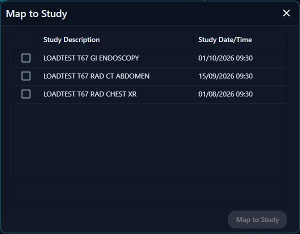
ลบการตรวจ (Delete Study)
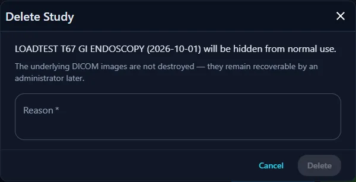
- กดไอคอน Delete Study สีแดงที่หัวแถบการตรวจ (สิทธิ์ Studies › Delete Study)
- กรอก Reason แล้วกด Delete — สำเร็จจะขึ้น “Study deleted successfully”
การลบแบบนี้เป็น การซ่อน — ภาพ DICOM ยังอยู่ กู้คืนได้ ไฟล์แนบของการตรวจถูกซ่อนตาม · ลบไม่ได้ถ้าการตรวจเคยถูกส่งต่อ (Refer) แล้ว
กู้คืน / ลบถาวร
ผู้มีสิทธิ์ลบหรือกู้คืนจะเห็นการตรวจที่ถูกลบเป็นแถวสีจาง มีชิป Deleted (ชี้เมาส์ดูเหตุผลที่ลบ) — หาได้จากหน้า Studies ตั้ง Deleted = Only
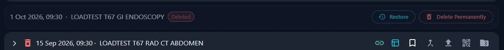
- Restore (สิทธิ์ Studies › Restore Study) — หน้าต่าง “Restore Study” ระบุเหตุผล การตรวจกลับมาเหมือนเดิม (“Study restored successfully”)
- Delete Permanently (สิทธิ์ Studies › Delete Study) — หน้าต่าง “Delete Study Permanently — this cannot be undone” ระบุเหตุผลและพิมพ์
DELETEเพื่อยืนยัน (“Study permanently deleted” · ถ้าผู้ป่วยไม่เหลือการตรวจ ระบบพากลับหน้ารายการ)
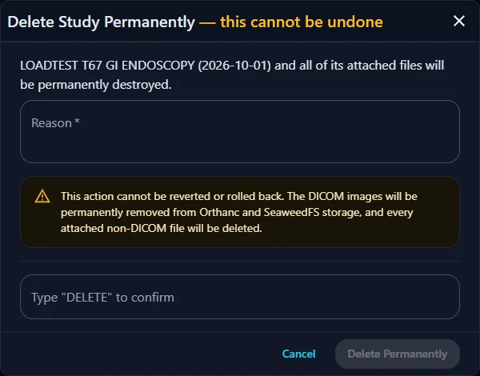
ลบถาวร จะลบภาพ DICOM ออกจากที่จัดเก็บ และลบไฟล์แนบทั้งหมดของการตรวจ กู้คืนไม่ได้ ใช้เมื่อต้องการแก้ข้อมูลการตรวจที่ผิด (ลบแล้วให้เครื่องส่งภาพใหม่)
รวมการตรวจ (Merge Studies)
ใช้เมื่อการตรวจครั้งเดียวถูกแยกเป็นหลายรายการ (เช่น เครื่องส่งภาพมาเป็น 2 study) — ไอคอน Merge ที่หัวแถบ (สิทธิ์ Studies › Merge Study)
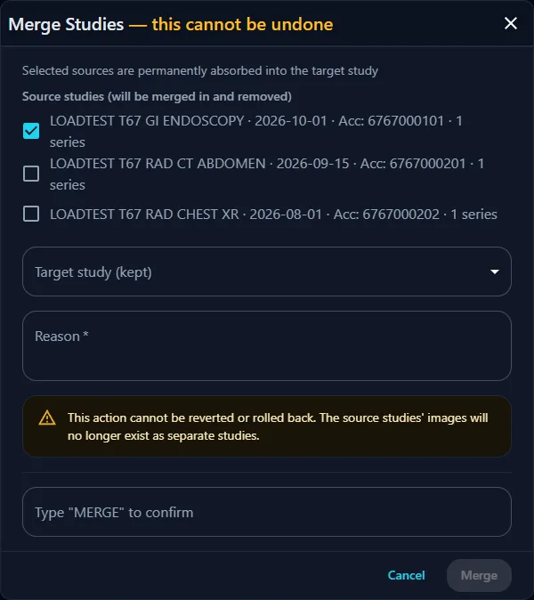
- ติ๊ก Source studies (การตรวจที่จะถูกรวมเข้าไปแล้วหายไป — รายการแสดง “คำอธิบาย · วันที่ · Acc: … · N series” เฉพาะการตรวจในขอบเขตของคุณที่ยังไม่ถูกลบ) — รายการที่กดมาถูกติ๊กไว้แล้ว
- เลือก Target study (kept) — การตรวจที่เก็บไว้
- ตรวจบรรทัดสรุป “N source(s) will be merged into: …” กรอก Reason พิมพ์
MERGEในช่องยืนยัน แล้วกด Merge (“Studies merged successfully”)
รวมได้เฉพาะการตรวจของผู้ป่วยคนเดียวกัน และย้อนกลับไม่ได้ · ถ้าขึ้น “Merge is still processing…” ให้รอสักครู่แล้วรีเฟรช
การตรวจที่อยู่นอกแผนกของคุณ
ผู้ใช้ขอบเขต Department หรือ Own Only (ที่แผนกผูก AE Title ไว้) เปิดได้เฉพาะการตรวจของแผนกตัวเอง การตรวจอื่นของผู้ป่วยจะแสดงเป็นแถวสรุปเส้นประ (วันที่ · คำอธิบาย · modality) พร้อมชิป นอกแผนก · <แผนก> (ชี้เมาส์: “การตรวจนี้อยู่นอกขอบเขตแผนกของคุณ — เปิดดูไม่ได้ ติดต่อแผนกต้นทาง”) กางไม่ได้และไม่มีปุ่ม
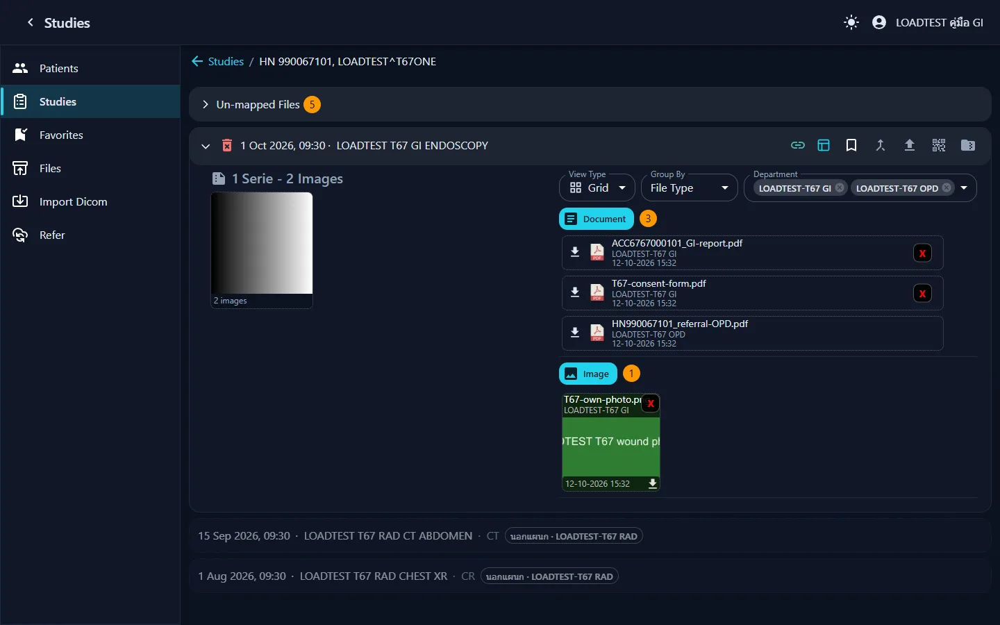
- ถ้าเปิดลิงก์การตรวจนอกขอบเขต จะขึ้น “ไม่พบการตรวจนี้ หรือการตรวจอยู่นอกขอบเขตแผนกของคุณ”
- ต้องการดูให้ติดต่อแผนกต้นทาง หรือขอผู้ดูแลตั้งขอบเขตเป็น Global (เช่น รังสีแพทย์ ER แพทย์ที่ปรึกษา)
- การตรวจ VIP ของคนอื่นจะไม่แสดงเลย แม้เป็นแถวสรุป
งานภาพและผู้ป่วย
Favorites — รายการโปรด
รวมการตรวจที่คุณบันทึกไว้ เช่น เคสที่ต้องติดตามหรือเคสสอน หน้าตาและการใช้งานเหมือนหน้า Studies
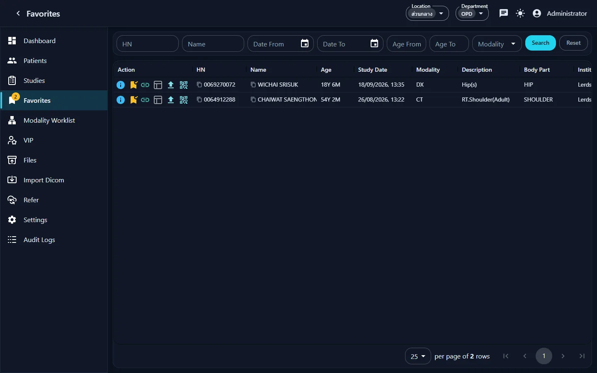
เพิ่มและเอาออก
- เพิ่ม: กดไอคอน Add to Favorites ในหน้า Studies (หรือ Favorite ในหน้า Study Details)
- เอาออก: กด อีกครั้ง (Remove from Favorites) — ในหน้า Favorites แถวจะหายทันที
- ตัวเลขสีส้มบนเมนู Favorites = จำนวนรายการโปรด (ซ่อนเมื่อเป็น 0 สูงสุด “99+”) · ระบบแจ้ง “Add favorite successfully” / “Remove favorite successfully”
- ตัวกรอง HN, Name, Date, Age, Modality ใช้กติกาเดียวกับหน้า Studies · หน้านี้ไม่มีตัวกรอง VIP / Deleted ไม่มีคอลัมน์ Status และไม่จำกัดช่วงวันที่ย้อนหลัง — แสดงรายการโปรดทั้งหมด (แถว VIP ยังมีสีเน้นเหมือนหน้า Studies)
- ยังไม่มีรายการจะขึ้น “ยังไม่มี study ใน Favorites — กดไอคอน bookmark ที่หน้า Studies เพื่อเพิ่ม”
การตรวจที่ถูกลบจะหายจาก Favorites และกลับมาเมื่อกู้คืน · เมื่อรวมการตรวจ รายการโปรดย้ายไปที่การตรวจปลายทาง
งานภาพและผู้ป่วย
เปิดภาพใน Viewer
Vantyx DICOM Viewer เปิดในหน้าต่างแยก ดูภาพได้ทันทีผ่านเบราว์เซอร์ ไม่ต้องติดตั้งโปรแกรม
วิธีเปิด Viewer
- ไอคอน Open Viewer ในหน้า Studies / Patients / Favorites / Study Details
- ดับเบิลคลิกที่แถวการตรวจ (หน้า Studies / Favorites: คอลัมน์ HN, Name, Age, Study Date, Modality, Description · หน้า Patients: HN / Name)
- คลิกภาพย่อ series ในหน้า Study Details
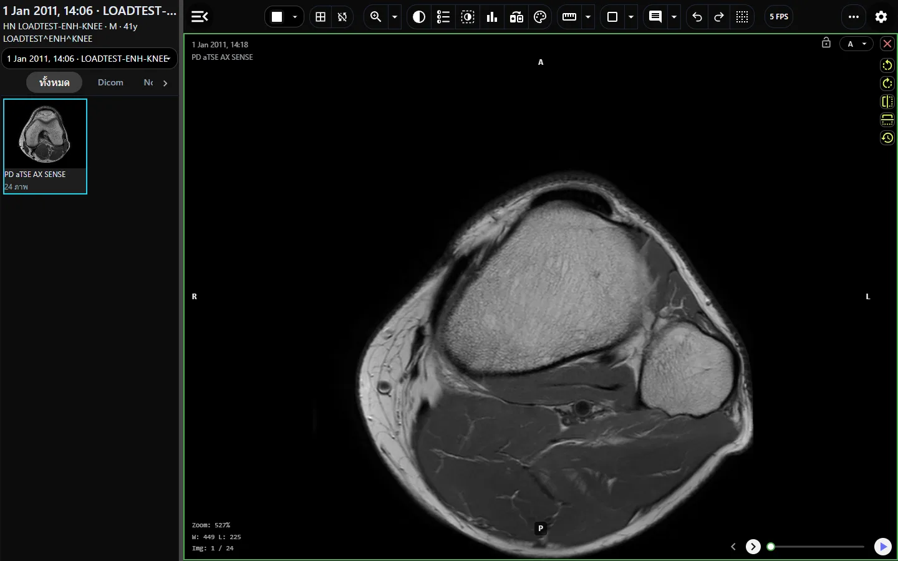
Viewer เปิดในหน้าต่างเดิมทุกครั้ง (เปิดการตรวจใหม่ หน้าต่างเก่าจะถูกแทนที่) · ถ้ามีหลายจอ เบราว์เซอร์จะถามสิทธิ์ “จัดการหน้าต่างบนทุกจอ” ครั้งแรก — กด อนุญาต แล้ว Viewer จะเปิดเต็มจอที่ 2 — ถ้าไม่อนุญาต Viewer จะเปิดเต็มจอปัจจุบันแทน (บนมือถือ/แท็บเล็ตเปิดเต็มจอเสมอ) · ถ้าเบราว์เซอร์บล็อกป๊อปอัป ให้อนุญาตป๊อปอัปของเว็บไซต์นี้
วิธีใช้เครื่องมือของ Viewer (MPR / 3D, PET/CT, Mammography, ECG, การวัด, Viewer Settings) ดูที่ คู่มือการใช้งาน Viewer · สรุปความสามารถที่ หน้าสรุปความสามารถของ Viewer
ลิงก์เปิดภาพ (Viewer URL)
ไอคอน Click to copy Viewer URL คัดลอกลิงก์รูปแบบ …/open-viewer?studyUID=… ส่งต่อให้เพื่อนร่วมงานได้ — ผู้เปิดลิงก์ต้อง Login
(ถ้ายังไม่ Login ระบบพาไป Login แล้วกลับมาที่ลิงก์ให้) และต้องมีสิทธิ์เห็นการตรวจนั้น
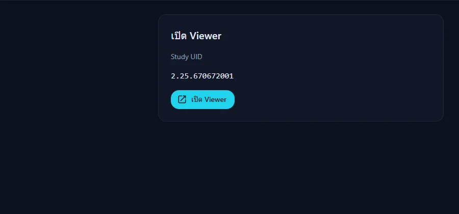
การตรวจที่ถูกลบ อยู่นอกขอบเขตแผนก หรือเป็น VIP ของผู้อื่น จะเปิดจากลิงก์ไม่ได้ · ระบบ HIS เปิดภาพผ่าน Integration Clients
งานภาพและผู้ป่วย
Modality Worklist
รายการนัดตรวจที่เครื่องตรวจดึงไปใช้ (ไม่ต้องพิมพ์ชื่อผู้ป่วยที่เครื่อง) — มาจากออเดอร์ของ HIS หรือออเดอร์ฉุกเฉินที่สร้างในระบบนี้
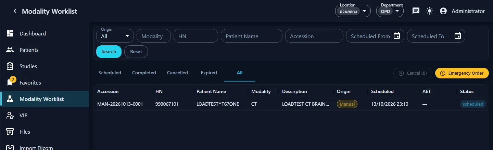
รายการและสถานะ
- ตัวกรอง: Origin (All / HIS / Manual), Modality, HN, Patient Name, Accession, Scheduled From / To (ต้องกรอกทั้งสองช่อง)
- แท็บสถานะ: Scheduled (รอตรวจ — ค่าเริ่มต้น), Completed, Cancelled, Expired, All
- คอลัมน์: Accession, HN, Patient Name, Modality, Description, Origin (HIS / Manual), Scheduled, AET (“—” = เครื่องใดก็ได้), Status (ชิป scheduled น้ำเงิน · completed เขียว · cancelled เทา · expired ส้ม), Arrived · ช่องติ๊กหน้าแถวมีเฉพาะแท็บ Scheduled และผู้มีสิทธิ์ยกเลิก
| สถานะ | เกิดเมื่อ |
|---|---|
| Scheduled | รับออเดอร์แล้ว รอตรวจ |
| Completed | ภาพของออเดอร์เข้าระบบแล้ว (จับคู่ด้วย Accession หรือ Study UID) — คอลัมน์ Arrived แสดงเวลาที่ภาพเข้า |
| Cancelled | ถูกยกเลิก (จาก HIS หรือในหน้านี้) |
| Expired | ค้างเป็น Scheduled เกิน 7 วัน ระบบเปลี่ยนให้ตอนเที่ยงคืน |
สร้างออเดอร์ฉุกเฉิน (Emergency Order)
ใช้เมื่อ HIS ใช้งานไม่ได้หรือผู้ป่วยฉุกเฉินยังไม่มีออเดอร์ — ปุ่มสีส้ม Emergency Order
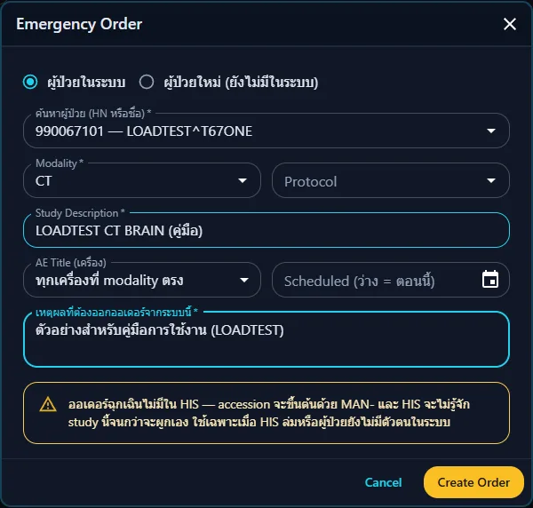
- เลือกผู้ป่วย: ผู้ป่วยในระบบ (พิมพ์ HN — ข้อความที่มีตัวเลขถือเป็น HN ต้องตรงทั้งเลข · พิมพ์ชื่อ (ไม่มีตัวเลข) อย่างน้อย 3 ตัวอักษร) หรือ ผู้ป่วยใหม่ (กรอก HN ถ้าทราบ — เว้นว่างระบบออก
VTX-…ให้, ชื่อ, เพศ Male / Female / Other, วันเกิด — ต้องไม่เป็นวันในอนาคต) - เลือก Modality จากรายการ แล้วเลือก Protocol (ไม่บังคับ — เปิดให้เลือกหลังเลือก Modality · เลือกแล้วเติม Study Description ให้ถ้ายังว่าง · เปลี่ยน Modality จะล้าง Protocol) และ Study Description
- เลือก AE Title (เครื่อง) (รายการแสดงเฉพาะเครื่องที่ Active เป็น “ชื่อ (แผนก)”) หรือ “ทุกเครื่องที่ modality ตรง” และเวลานัด (ว่าง = ตอนนี้)
- กรอกเหตุผลที่ต้องออกออเดอร์จากระบบนี้ แล้วกด Create Order (กดได้เมื่อมีผู้ป่วย Modality Study Description และเหตุผลครบ) — สำเร็จจะขึ้น “สร้างออเดอร์ฉุกเฉิน MAN-… (CT) สำหรับ HN … แล้ว”
ออเดอร์ฉุกเฉินไม่มีใน HIS (หน้าต่างมีกล่องเตือนข้อนี้) — Accession จะขึ้นต้นด้วย MAN-ปปปปดดวว-NNNN ต้องตามไปบันทึกใน HIS ภายหลังตามระเบียบของโรงพยาบาล
ยกเลิกรายการ
- แท็บ Scheduled → ติ๊กรายการที่ต้องการยกเลิก
- กด Cancel (N) ตรวจรายการ Accession ในหน้าต่าง “ยกเลิก worklist” แล้วกด Confirm Cancel — ระบบแจ้ง “ยกเลิกแล้ว N รายการ (ข้าม M รายการที่ไม่ได้อยู่ในสถานะ scheduled)”
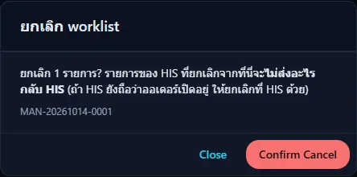
การยกเลิกรายการจาก HIS ในหน้านี้ไม่ได้แจ้งกลับไปที่ HIS
งานภาพและผู้ป่วย
VIP
การตรวจที่ต้องจำกัดคนดู (เช่น บุคคลสำคัญ ผู้ป่วยคดี) — การตรวจ VIP เห็นได้เฉพาะผู้ที่ได้รับมอบหมาย 1 คน และผู้ดูแลระบบ
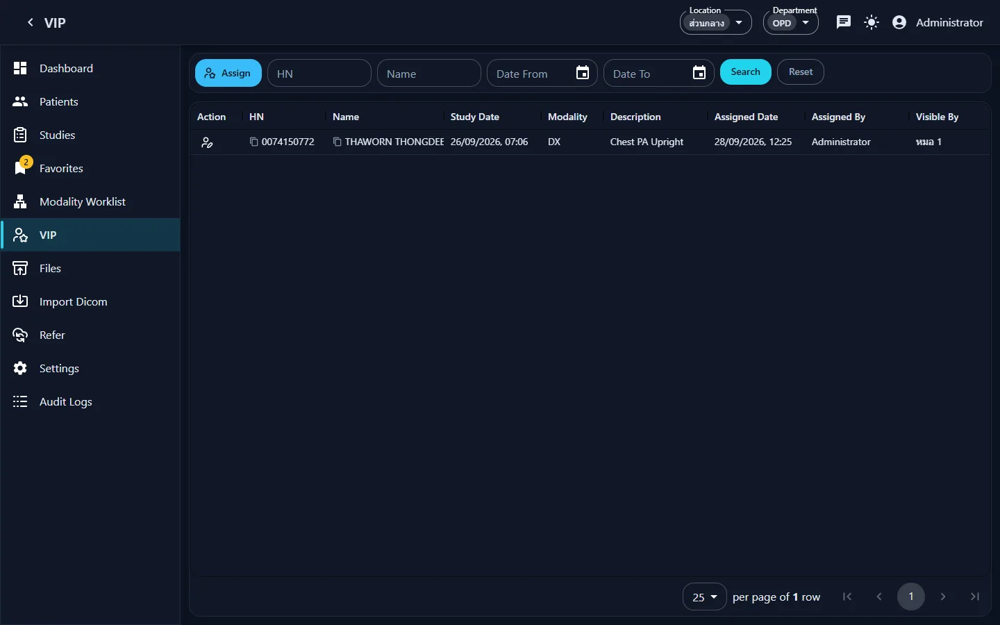
รายการ VIP
ตัวกรอง HN, Name, Date From / To (ต้องกรอกทั้งสองช่อง · ไม่ระบุ = ย้อนหลังตามค่า DEFAULT_DATE) · คอลัมน์ HN, Name, Study Date, Modality, Description, Assigned Date, Assigned By, Visible By
มอบหมาย VIP (Assign)
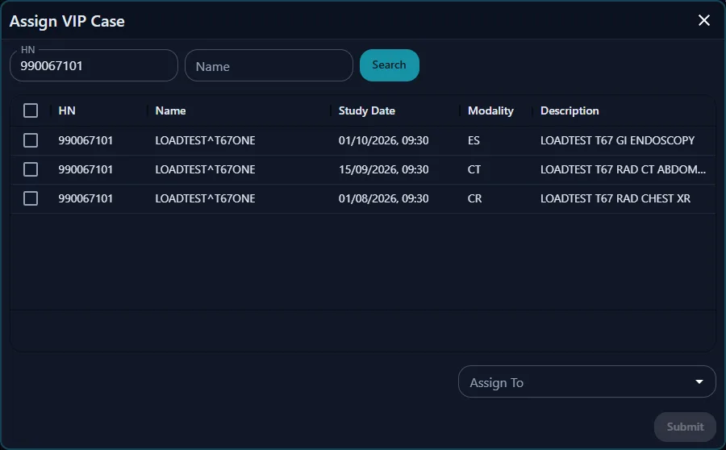
- กด Assign แล้วค้นการตรวจด้วย HN (ตรงตัว) หรือ Name (บางส่วน) — ปุ่ม Search กดได้เมื่อกรอกอย่างใดอย่างหนึ่ง (ค้นย้อนหลัง 180 วัน สูงสุด 20 รายการ เฉพาะการตรวจที่ยังไม่เป็น VIP)
- ติ๊กการตรวจที่ต้องการ (คอลัมน์ HN, Name, Study Date, Modality, Description)
- เลือกผู้ใช้ใน Assign To แล้วกด Submit
แก้ไข / ยกเลิก VIP
กดไอคอน Edit VIP case ที่แถว → Remove … (ยกเลิก VIP ทันที) หรือ Re-Assign เพื่อมอบหมายให้คนอื่น — เปิดช่อง Assign To เลือกผู้ใช้แล้วกด Submit (การตรวจที่เป็น VIP แล้วจะไม่ขึ้นในหน้าต่าง Assign ต้องเปลี่ยนคนที่นี่)
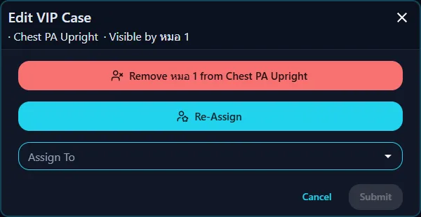
ผู้ป่วยที่มีการตรวจ VIP ของผู้อื่นจะถูกซ่อนจากผู้ใช้ทั่วไปทั้งในรายการ การจับคู่ไฟล์อัตโนมัติ และหน้าสแกนมือถือ (ระบบตอบว่า “ไม่พบ”)
ไฟล์และการรับส่งข้อมูล
Files — ไฟล์เอกสาร / รูป
ที่จัดการไฟล์ที่ไม่ใช่ DICOM (ใบส่งตัว ผลแล็บ รูปแผล วิดีโอ) ตั้งแต่อัปโหลดไฟล์ที่ยังไม่รู้ว่าเป็นของใคร ผูกเข้าผู้ป่วยหรือการตรวจ แชร์ให้แผนกอื่น ไปจนถึงค้นหา ลบ และกู้คืน
แท็บในหน้า Files
| แท็บ | ใช้ทำอะไร | สิทธิ์เพิ่มเติม |
|---|---|---|
| Bulk Upload | อัปโหลดเอกสารจำนวนมาก ระบบอ่าน barcode/ชื่อไฟล์แล้วเสนอผู้ป่วยให้ยืนยัน — ดู หน้า Bulk Upload | Files › Bulk Upload (Auto-map) |
| Un-mapped | ไฟล์ที่อัปโหลดแล้วแต่ยังไม่ผูกผู้ป่วย รอ Map | — |
| Mapped to Patient | ประวัติไฟล์ที่ Map เข้าผู้ป่วยแล้ว (ระดับผู้ป่วย) | — |
| Mapped to Study | ประวัติไฟล์ที่ Map เข้าการตรวจแล้ว (ดูอย่างเดียว) | — |
| Search Non-Dicom | ค้นไฟล์ทั้งหมดของผู้ป่วยทุกช่องทาง และเป็นถังขยะสำหรับกู้คืน | Files › Search Non-Dicom |
ไฟล์ทุกช่องทาง (หน้า Study, Patients, มือถือ, Bulk Upload) สุดท้ายอยู่ใน Search Non-Dicom · ผู้มีสิทธิ์ Bulk Upload จะเปิดมาที่แท็บนั้นก่อน · เปลี่ยนแท็บแล้วตัวกรองของแท็บจะถูกล้าง · ช่องข้อความทุกแท็บต้องพิมพ์อย่างน้อย 3 ตัวอักษร และช่อง Departments มีเฉพาะแผนกที่คุณสังกัด
Un-mapped — ไฟล์ที่ยังไม่ผูกผู้ป่วย
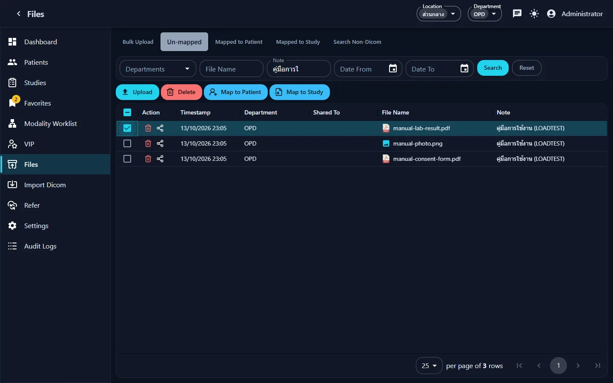
- ตัวกรอง: Departments, File Name, Note, Date From / To (ใส่ช่องเดียวได้)
- คอลัมน์: Action (ลบถาวร / แชร์), Timestamp, Department, Shared To, File Name (คลิกเพื่อดูตัวอย่าง), Note
- วิดีโอที่กำลังแปลงไฟล์ (“This video is transcoding”) ยังเลือก/Map/ลบไม่ได้ จนกว่าจะแปลงเสร็จ (ไอคอนลบขึ้น “กำลังแปลงไฟล์ ลบไม่ได้”)
- ไฟล์ใน Un-mapped ที่ไม่ถูก Map ภายใน 90 วัน จะถูกลบอัตโนมัติ
- ปุ่ม Upload / Map to Patient / Map to Study แสดงเฉพาะผู้มีสิทธิ์ย่อยที่ระบุด้านล่าง (เช่นเดียวกับปุ่ม Delete)
อัปโหลดไฟล์เข้า Un-mapped
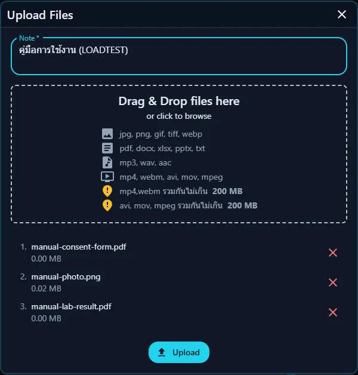
- กด Upload (สิทธิ์ Files › Upload Temp Files)
- เลือก Department (ถ้ามีหลายแผนก) และกรอก Note — ใช้กับทุกไฟล์ในรอบนี้ เช่น “ใบส่งตัวจาก รพ.สต.”
- ลากไฟล์มาวางหรือคลิกเลือก แล้วกด Upload (ไม่กรอก Note จะขึ้น “Please enter a note…” · ระหว่างส่งมีปุ่ม Cancel)
ชนิดไฟล์และขนาดที่รับเหมือน การอัปโหลดเข้าการตรวจ (หน้าต่างแสดงรายการชนิดและขีดจำกัดไว้ด้วย)
Map to Patient / Map to Study
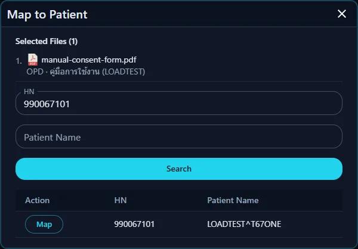
- ติ๊กไฟล์ใน Un-mapped แล้วกด Map to Patient หรือ Map to Study (สิทธิ์ Files › Map Temp Files to Patient or Study)
- ตรวจรายชื่อ Selected Files แล้วค้นด้วย HN และ/หรือ Patient Name
- กด Map ที่แถวผู้ป่วย (หรือการตรวจ) ที่ถูกต้อง
ไม่แน่ใจว่าเป็นการตรวจไหน ให้ Map to Patient ก่อน แล้วผูกการตรวจทีหลังจากแท็บ Mapped to Patient หรือหน้า Study Details
แชร์ไฟล์ถึงแผนกอื่น
ไฟล์ระดับผู้ป่วยเห็นได้เฉพาะแผนกที่อัปโหลด ถ้าต้องการให้แผนกอื่นเห็น (เช่น OPD ส่งใบส่งตัวให้ GI ก่อนมีการตรวจ) ให้แชร์
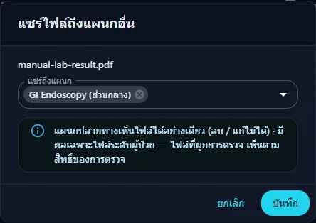
- กดไอคอน แชร์ถึงแผนกอื่น ที่แถวไฟล์ (แท็บ Un-mapped, Mapped to Patient หรือ Search Non-Dicom)
- เลือกแผนกในช่อง แชร์ถึงแผนก (หลายแผนกได้ — รายการไม่มีแผนกเจ้าของไฟล์และแผนกที่ปิดใช้งาน · ว่าง = “ไม่แชร์”) แล้วกด บันทึก
- ถอนการแชร์: เปิดหน้าต่างเดิม เอาแผนกออก แล้วบันทึก
- แชร์ได้เฉพาะไฟล์ของแผนกตัวเองและต้องมีสิทธิ์ Files › Map Temp Files to Patient or Study
- แผนกปลายทางดูได้อย่างเดียว ลบ/แก้ไม่ได้ · ผู้ใช้ขอบเขต Own Only ในแผนกปลายทางจะไม่เห็น
- มีผลเฉพาะไฟล์ระดับผู้ป่วย — เมื่อผูกไฟล์เข้าการตรวจ ไฟล์จะเห็นตามสิทธิ์ของการตรวจแทน
- ยังไม่มีการแจ้งเตือนแผนกปลายทาง ควรแจ้งทางแชทหรือโทรศัพท์
ลบไฟล์ใน Un-mapped
ติ๊กไฟล์แล้วกด Delete หรือไอคอน ลบถาวร ที่แถว (สิทธิ์ Files › Delete Temp Files) — ระบบตรวจซ้ำก่อนลบ ไฟล์ที่กำลังแปลงหรือถูก Map ไปแล้วจะแสดงในกลุ่ม “ลบไม่ได้” · การลบใน Un-mapped เป็นการลบถาวร กู้คืนไม่ได้
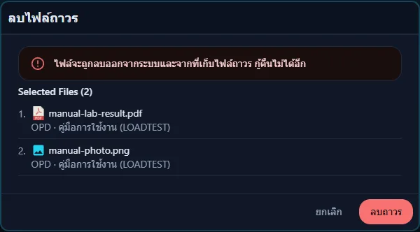
Mapped to Patient / Mapped to Study
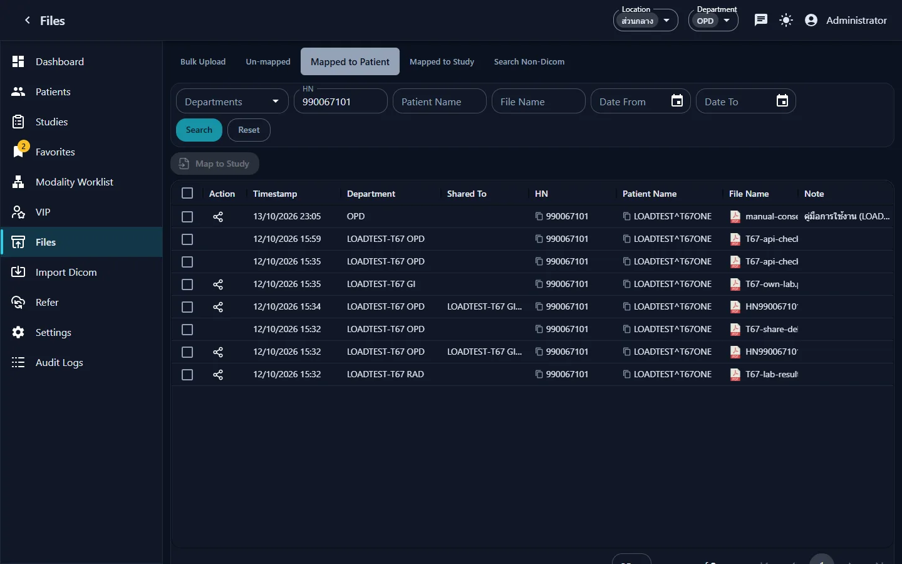
- Mapped to Patient: ตัวกรอง Departments, HN, Patient Name, File Name, วันที่ · คอลัมน์รวม HN, Patient Name, Mapped Date, Shared To
- ผูกไฟล์ระดับผู้ป่วยเข้าการตรวจ: ติ๊กไฟล์ของผู้ป่วยคนเดียวกัน (ต่าง HN จะขึ้น “Selected files must all belong to the same patient…”) แล้วกด Map to Study ระบบค้นการตรวจของ HN นั้นให้อัตโนมัติ · ไฟล์ที่แผนกอื่นแชร์มาติ๊กไม่ได้ และไม่มีไอคอนแชร์
- Mapped to Study: ดูอย่างเดียว (ไม่มีคอลัมน์ Action / Shared To) มีตัวกรองและคอลัมน์ Study Description เพิ่ม
- สองแท็บนี้เก็บประวัติการ Map — ไฟล์ที่ถูกลบถาวรไปแล้วยังมีแถวอยู่
Search Non-Dicom — ค้นหา ลบ และกู้คืนไฟล์
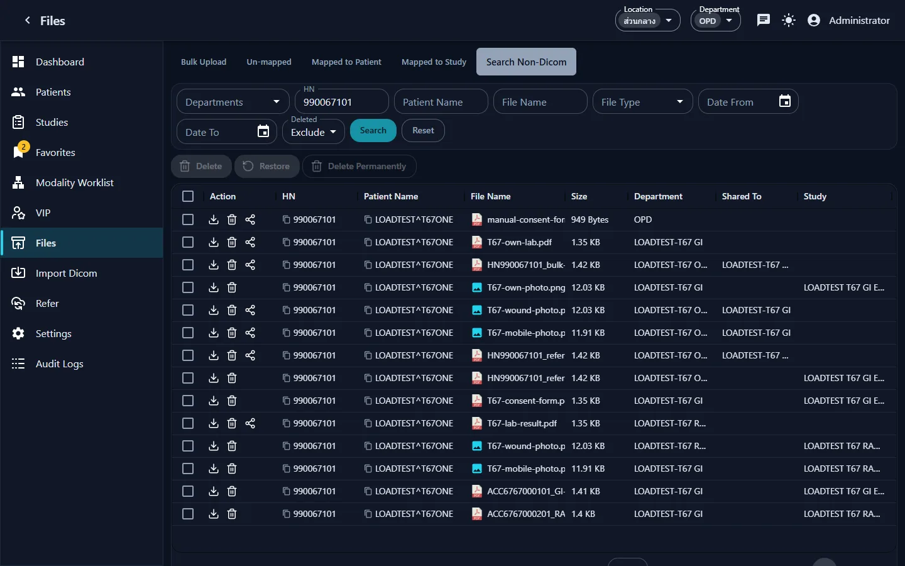
- ตัวกรอง: Departments, HN, Patient Name, File Name, File Type (เลือกนามสกุล เช่น pdf, docx, jpg — จัดกลุ่มเป็นเอกสาร / รูปภาพ / วิดีโอ / เสียง), วันที่อัปโหลด, Deleted (Exclude / Include / Only — เห็นเมื่อมีสิทธิ์ลบหรือกู้คืน)
- คอลัมน์: Action, HN, Patient Name, File Name, Size, Department, Shared To, Study, Uploaded, Uploaded By, Status (ชิป Deleted สำหรับไฟล์ในถังขยะ)
- ปุ่มในแถว: Download, ลบไฟล์, แชร์ถึงแผนกอื่น (เฉพาะไฟล์ระดับผู้ป่วยของแผนกตัวเองที่ยังไม่ถูกลบ), กู้คืนไฟล์, ลบถาวร (ตามสถานะไฟล์และสิทธิ์)
- ทำหลายไฟล์พร้อมกัน: ติ๊กแล้วกด Delete / Restore / Delete Permanently — หน้าต่างยืนยันแยกรายการเป็น “จะ<ทำ> (n)” และ “<ทำ>ไม่ได้ (n)” พร้อมเหตุผล เช่น ถูกลบไปแล้ว · ไม่ได้ถูกลบอยู่ · ต้องลบชั่วคราวก่อน · ไฟล์ของแผนกอื่น — ดูได้อย่างเดียว
| การทำงาน | ผล | สิทธิ์ |
|---|---|---|
| ลบไฟล์ (Delete) | ย้ายไปถังขยะ ซ่อนจากรายการ กู้คืนได้ภายใน 90 วัน (เกินแล้วระบบลบถาวรเอง) | Files › Delete Non-Dicom Files |
| กู้คืน (Restore) | ไฟล์กลับมาแสดงตามเดิม — ถ้าการตรวจของไฟล์ถูกลบอยู่ ต้องกู้คืนการตรวจก่อน | Files › Restore Non-Dicom Files |
| ลบถาวร (Delete Permanently) | ลบออกจากที่จัดเก็บ กู้คืนไม่ได้ — ทำได้กับไฟล์ที่ลบไปแล้ว (อยู่ในถังขยะ) เท่านั้น | Files › Delete Non-Dicom Files |
หาไฟล์ที่ลบไปแล้ว: ตั้ง Deleted = Only แล้วกด Search
ลบ/กู้คืนได้เฉพาะไฟล์ของแผนกตัวเอง (ผู้ใช้ Global ได้ทุกแผนก) — ไฟล์ของแผนกอื่นที่เห็นผ่านการตรวจหรือการแชร์เป็นแบบดูอย่างเดียว
เปิดดูไฟล์
- คลิกชื่อไฟล์ในทุกแท็บเพื่อเปิดดู: รูปภาพเปิดเป็นแกลเลอรี (รวม TIFF — เลื่อนดูได้เฉพาะรูปในหน้าตารางปัจจุบัน), เสียง/วิดีโอเล่นในหน้าต่าง, PDF / Word / Excel / PowerPoint / txt เปิดในหน้าต่างของตัวเอง
ผู้อัปโหลด (Uploaded By)
Uploaded By คือ “คนที่นำไฟล์เข้าเวชระเบียนผู้ป่วย” — การ Map to Patient / Map to Study จาก Un-mapped และการยืนยันใน Bulk Upload ถือว่าคนกดเป็นผู้รับผิดชอบการระบุตัวผู้ป่วย ผู้อัปโหลดไฟล์ตัวจริงดูได้ใน Audit Logs
ไฟล์และการรับส่งข้อมูล
Bulk Upload — อัปโหลดและจับคู่อัตโนมัติ
อัปโหลดเอกสารสแกนหรือรูปจำนวนมากที่มีหลายผู้ป่วยปนกัน ระบบอ่าน barcode / QR ชื่อไฟล์ และชื่อโฟลเดอร์ แล้วเสนอผู้ป่วยและการตรวจให้ — ไม่มีไฟล์ใดเข้าเวชระเบียนจนกว่าจะกดยืนยัน
อัปโหลดไฟล์
- เลือก Department (ถ้ามีหลายแผนก) และถ้าต้องการ ตั้ง แชร์ถึงแผนก (รอบใหม่) — การแชร์มีผลหลังยืนยัน (สองช่องนี้ล็อกเมื่อเลือกหรือเริ่มรอบแล้ว)
- ช่อง รอบอัปโหลด = “รอบใหม่” (ระบบสร้างรอบเมื่อเริ่มส่งไฟล์) หรือเลือกรอบเดิมเพื่อตรวจต่อ (รายการแสดง “วันที่ · N ไฟล์ + DICOM n · note” เฉพาะ 20 รอบล่าสุดของคุณ) · ปุ่ม เริ่มรอบใหม่
- ลากไฟล์หรือทั้งโฟลเดอร์มาวาง หรือกด เลือกทั้งโฟลเดอร์
- ระบบอ่าน barcode ในเครื่องของคุณแล้วส่งทีละไฟล์ (พร้อมกัน 3 ไฟล์) บรรทัดสรุป “x/y ไฟล์ · กำลังทำ n” และสถานะรายไฟล์ รอ → กำลังอ่าน barcode → รอส่ง → กำลังส่ง → ส่งแล้ว (หรือ ส่งแล้ว (ซ้ำ), ล้มเหลว, ไม่อัปโหลด, DICOM → PACS รับแล้ว/มีอยู่แล้ว, DICOMDIR — ข้าม, PDF ตัดเป็น N ไฟล์) · เน็ตหลุดหรือเซิร์ฟเวอร์ไม่ตอบ ระบบลองซ้ำให้เอง 3 ครั้ง ที่ยังล้มเหลวกด ส่งใหม่ (N)
| ชนิดไฟล์ | การจัดการ |
|---|---|
| รูปภาพ (รวม TIFF หลายหน้า) | อ่าน barcode / QR (รูปใหญ่เกิน 50 ล้านพิกเซล หรือ TIFF เกิน 300 MB จะอัปโหลดโดยไม่อ่าน barcode) |
| อ่าน barcode ทุกหน้า (ค่าเริ่มต้นไม่เกิน 200 หน้า — เกินจะแจ้ง “อ่าน barcode X จาก Y หน้า”) และตัดแยกผู้ป่วยตามหน้าที่มี barcode ให้ — หน้าที่ไม่มี barcode ต่อท้ายกลุ่มก่อนหน้า · PDF ที่ใส่รหัสผ่านอัปโหลดได้แต่ไม่อ่าน barcode | |
| เอกสาร / เสียง / วิดีโอ | จับคู่จากชื่อไฟล์ / โฟลเดอร์ |
| DICOM (.dcm) | ส่งเข้า PACS ทันที ไม่ผ่าน Review (DICOMDIR ข้าม) |
| ไฟล์ระบบ (Thumbs.db, .DS_Store, desktop.ini, __MACOSX, ~$…, โฟลเดอร์ซ่อน) | ข้ามอัตโนมัติ |
| PDF เสีย (เปิดไม่ได้) | ไม่อัปโหลด — แจ้งรายชื่อ “PDF เสีย เปิดไม่ได้ — ไม่อัปโหลด N ไฟล์” |
| ชนิดที่ไม่รองรับ (HEIC, zip …) | เซิร์ฟเวอร์ปฏิเสธ — แถวขึ้นชิปสีแดงบอกสาเหตุ และไม่ถูกนับใน “ส่งใหม่” |
ตั้งชื่อไฟล์หรือโฟลเดอร์ให้มีตัวระบุ เช่น HN990067101_ใบส่งตัว.pdf หรือ ACC6767000201_report.pdf ระบบจะจับคู่ได้แม้เอกสารไม่มี barcode
1 รอบรับได้ 300 ไฟล์ เกินแล้วระบบเปิดรอบใหม่ให้เอง (แจ้ง “รอบเดิมครบ 300 ไฟล์ — ขึ้นรอบใหม่ให้อัตโนมัติ…”) · การลองซ้ำอัตโนมัติและปุ่ม “ส่งใหม่” ไม่สร้างไฟล์ซ้ำ แต่การลากไฟล์ชุดเดิมมาวางอีกครั้งจะได้ไฟล์ซ้ำ (ยกเว้น DICOM ซึ่ง PACS ตอบว่า “มีอยู่แล้ว”) · ถ้าโหลดค่า barcode ไม่ได้ ระบบจะเตือนว่าไฟล์จะถูกส่งโดยไม่อ่าน barcode
ตรวจและยืนยัน (Review)
| ระดับ | ความหมาย | ควรทำ |
|---|---|---|
| 🟢 ข้อมูลตรงกัน | ตัวระบุชี้ผู้ป่วยคนเดียวชัดเจน | ตรวจคร่าว ๆ แล้วกด ยืนยันทั้งหมดที่เป็นสีเขียว |
| 🟡 ต้องตรวจ | พบผู้ป่วยแต่ข้อมูลไม่พอหรือกำกวม | ดูชื่อ HN วันเกิดให้แน่ แล้วติ๊กทีละแถว → ยืนยันที่เลือก |
| 🔴 จับคู่ไม่ได้ | ไม่พบ / ตัวระบุขัดกัน / ไม่มีตัวระบุ | กดปุ่ม ผู้ป่วย หรือ Study ในคอลัมน์ “เปลี่ยนเป้า” เพื่อเลือกเอง หรือปล่อยไว้ไป Map ใน Un-mapped |
- แถบสรุปด้านบน: 🟢 n · 🟡 n · 🔴 n · map แล้ว n · กำลังแปลงวิดีโอ n · DICOM ส่งเข้า PACS n — กรองตามระดับได้ · ปุ่ม ยืนยันทั้งหมดที่เป็นสีเขียว, ยืนยันที่เลือก, แชร์ที่เลือก, จับคู่ใหม่, รีเฟรช
- คอลัมน์: ระดับ (ชี้เมาส์ดูเหตุผล), ไฟล์ (คลิกดูตัวอย่าง / “หน้า a–b” ของ PDF ที่ถูกตัด), ตัวระบุ และแหล่งที่อ่าน (barcode / ชื่อไฟล์ / โฟลเดอร์ / ข้อความ PDF / ตามลำดับหน้า), ผู้ป่วยที่เสนอ, Study (เลือก “ระดับผู้ป่วย (ผูก study ทีหลัง)” หรือการตรวจที่เสนอ), สถานะ (รอยืนยัน · map ผู้ป่วยแล้ว · map study แล้ว · ลบแล้ว · กำลังแปลงวิดีโอ), แชร์ถึง (ไอคอน เฉพาะไฟล์ที่รอยืนยัน), เปลี่ยนเป้า (ปุ่ม ผู้ป่วย / Study มีทุกแถวที่รอยืนยัน — เลือกแล้วกด Map ในหน้าต่าง ไฟล์จะถูกผูกทันทีไม่ต้องยืนยันซ้ำ) · ติ๊กได้เฉพาะแถวที่รอยืนยัน มีผู้ป่วย ไม่ใช่ 🔴 และไม่ได้กำลังแปลงวิดีโอ · ตารางแสดงหน้าละ 100 แถว
- ระบบเสนอการตรวจเมื่อมี Accession, AN (ช่วงที่นอนโรงพยาบาล) หรือวันที่ของไฟล์ใกล้วันตรวจ ±3 วัน — มีแค่ HN จะเสนอระดับผู้ป่วย (ถูกต้อง ยืนยันได้)
- การตรวจที่ขึ้น “นอกแผนก” ยืนยันได้ตามปกติ ไฟล์จะผูกการตรวจนั้นและแผนกเจ้าของการตรวจจะเห็น
- วิดีโอที่กำลังแปลงยังยืนยันไม่ได้ ตารางรีเฟรชเองทุก 10 วินาที
- จับคู่ใหม่ — ใช้หลังผู้ดูแลแก้ Barcode Rules หรือมีข้อมูลผู้ป่วย/admission ใหม่จาก HIS · แชร์ที่เลือก — ตั้งการแชร์ให้หลายไฟล์
ไฟล์ที่ยังไม่ยืนยันจะอยู่ในแท็บ Un-mapped ด้วย และถูกลบอัตโนมัติเมื่อเกิน 90 วัน · 🔴 “ไม่พบ” อาจหมายถึงผู้ป่วยมีการตรวจ VIP ที่ไม่ได้มอบหมายให้คุณ
ไฟล์และการรับส่งข้อมูล
อัปโหลดจากมือถือ
ถ่ายรูป (แผล ฟิล์ม เอกสาร) ด้วยมือถือเข้าระบบโดยตรง 2 วิธี: สแกน QR จากหน้าจอคอมพิวเตอร์ หรือ Login บนมือถือแล้วสแกน barcode ผู้ป่วย
วิธีที่ 1 — QR จากหน้าจอคอมพิวเตอร์
- กดไอคอน Upload from Mobile ที่แถวการตรวจ (Studies / Favorites), แถวผู้ป่วย (Patients — ระดับผู้ป่วย) หรือ Mobile Upload ในหน้า Study Details
- เลือก Department ถ้ามีหลายแผนก (ไม่มีแผนกที่เลือกไว้จะขึ้น “ผู้ใช้ยังไม่ได้เลือกแผนก…”) · QR ระดับผู้ป่วยตั้ง แชร์ถึงแผนก ได้ มีชิป “ใช้ล่าสุด:” ให้กดลัด — เปลี่ยนค่าแล้วต้องออก QR ใหม่
- ใช้กล้องมือถือสแกน QR → ตรวจชื่อ HN วันเกิดบนมือถือให้ตรงกับสายรัดข้อมือ → กด ใช่ ผู้ป่วยคนนี้
- กด ถ่ายรูป (หรือ เลือกจากเครื่อง — รูปและ PDF) ลบรูปที่ไม่ต้องการด้วย แล้วกด ส่ง N ไฟล์ — รูปที่ส่งไม่สำเร็จจะมีแถบแดงบอกสาเหตุ กดส่งอีกครั้ง () เฉพาะรูปที่ค้าง · เสร็จแล้วกด เสร็จสิ้น (“ส่งแล้ว N ไฟล์ — ปิดหน้านี้ได้เลย”)
- QR ใช้ได้ครั้งเดียว และหมดอายุตามเวลาใต้ QR (ค่าเริ่ม 15 นาที ผู้ดูแลตั้งได้ 5–60 นาที) — หมดอายุจะขึ้น “QR หมดอายุแล้ว” กด สร้าง QR ใหม่ · คัดลอกลิงก์ (เปลี่ยนเป็น “คัดลอกแล้ว”) เพื่อส่งลิงก์แทน QR
- บนมือถือมีนาฬิกา “หมดเวลาใน mm:ss” · ส่งได้ไม่เกิน 100 ไฟล์ต่อ QR (ครบแล้วระบบแจ้ง) · กด ไม่ใช่ ที่หน้ายืนยันผู้ป่วย = ยกเลิก QR นี้ ต้องสร้างใหม่
- รูปเข้าเวชระเบียนทันทีในนามคนที่ออก QR (ชื่อแสดงบนแถบบนของมือถือ ไม่ต้องยืนยันซ้ำ) · ผู้ดูแลตั้งให้ย่อรูปก่อนส่งได้ (
NON_DICOM_MOBILE_MAX_EDGE_PX)
วิธีที่ 2 — Login บนมือถือแล้วสแกนผู้ป่วย
- เปิดเว็บบนมือถือ → Login ด้วยปุ่ม Sign in to SCAN QR/Barcode
- หน้า “สแกนผู้ป่วยเพื่ออัปโหลดรูป”: กด เปิดกล้องสแกน (มีเฉพาะเมื่อเข้าผ่าน https — ไม่ใช่จะมีข้อความบอก), ถ่ายรูป barcode หรือพิมพ์ HN / AN แล้วกด ค้นหา (บัญชีที่ไม่มีสิทธิ์จะขึ้น “บัญชีนี้ไม่มีสิทธิ์ Mobile Upload…”)
- ตรวจผู้ป่วยที่พบ (ชิป ข้อมูลตรงกัน หรือ ต้องตรวจ พร้อมกล่องเตือนสีเหลือง “ตรวจให้แน่ใจว่าเป็นผู้ป่วยคนนี้…”) แล้วเลือก ผูกรูปกับ ระดับผู้ป่วย (เลือกแผนกและแชร์ถึงแผนกได้) หรือการตรวจที่ระบบเสนอ — แต่ละรายการบอกที่มา (Accession ตรง / ช่วง admit / ใกล้วันนี้) และป้าย “นอกแผนก” ถ้าเป็นการตรวจของแผนกอื่น
- กด ใช้ผู้ป่วยนี้ — ไปถ่ายรูป แล้วทำเหมือนวิธีที่ 1 · ไม่ใช่คนนี้กด ไม่ใช่ — สแกนใหม่
- ไม่พบจะขึ้น “ไม่พบผู้ป่วย หรือระบุผู้ป่วยไม่ได้แน่ชัด” พร้อมเหตุผลและปุ่ม สแกนใหม่
- เสร็จแล้วกด สแกนผู้ป่วยคนถัดไป หรือ Sign Out ด้านล่าง
- ชนิด barcode ที่อ่านโดยค่าเริ่มต้น: Code128, Code39, QR, DataMatrix, PDF417 · ตัวเลขล้วนถือเป็น HN หรือ AN (เลข accession ต้องมี prefix ตาม Barcode Rules เช่น
ACC…) - ไม่แน่ใจว่ารูปเป็นของการตรวจไหน → เลือกระดับผู้ป่วย แล้วผูกการตรวจทีหลังได้
ข้อควรรู้
- ไม่รับไฟล์ HEIC — iPhone ตั้งค่า Settings › Camera › Formats › Most Compatible
- Android บางรุ่นบันทึกรูปลงแกลเลอรีของเครื่องด้วย — ลบเองตามนโยบายของโรงพยาบาล
- ถ้าเปิดหน้า
/m/uploadโดยไม่ได้สแกน QR จะเห็นคำแนะนำให้สแกน QR หรือปุ่มไปหน้าสแกนผู้ป่วย - ผู้ดูแลปิดการเลือกรูปจากแกลเลอรีได้ (
NON_DICOM_MOBILE_ALLOW_GALLERY)
ไฟล์และการรับส่งข้อมูล
Import Dicom
นำเข้าภาพ DICOM จากแผ่น CD/DVD หรือไฟล์ที่ได้จากโรงพยาบาลอื่น โดยบีบอัดเป็นไฟล์ .zip แล้วอัปโหลด
ขั้นตอน
- บีบอัดโฟลเดอร์ภาพเป็น .zip ไฟล์เดียว (มีโฟลเดอร์ย่อยข้างในได้) ขนาดไม่เกิน 1 GB
- เลือก Department (ถ้ามีหลายแผนก) — แผนกนี้จะเป็นแผนกที่นำเข้าการตรวจ
- ลากไฟล์ .zip มาวางหรือคลิกเลือก (ได้ครั้งละ 1 ไฟล์ — วางไฟล์ใหม่จะแทนที่ · เอาออกด้วย ) แล้วกด Upload รอแถบความคืบหน้าจนจบ (ยกเลิกระหว่างส่งได้ด้วย Cancel)
- ระบบแจ้งผล เช่น “Imported N DICOM file(s) successfully” — ภาพจะขึ้นในหน้า Studies ภายในราว 1 นาที
- 1 zip = 1 การตรวจ · ไฟล์ที่ไม่ใช่ DICOM ใน zip (รูป เอกสาร ฯลฯ) จะผูกเข้ากับการตรวจนั้นให้อัตโนมัติเมื่อรับภาพเสร็จ
- ไฟล์ใน zip ที่รับ: DICOM (.dcm / ไม่มีนามสกุล), รูปภาพ, เอกสาร, เสียง, วิดีโอ (รายการแสดงในหน้า) · ตรวจว่าเป็น zip จริงจากเนื้อไฟล์ — ไฟล์ที่เปลี่ยนนามสกุลเป็น .zip จะถูกปฏิเสธ (“Not a .zip file” / “File content is not a real .zip archive”) · เกิน 1 GB ขึ้น “File too large”
- ถ้าบางไฟล์ไม่สำเร็จจะขึ้น “Imported N file(s), M failed” · ไม่มี DICOM เลยจะขึ้น “Import failed — no DICOM file was uploaded” · ไม่ได้เลือกแผนกจะขึ้น “Please select a department before uploading.”
การตรวจที่นำเข้าจะนับเป็นของแผนกที่เลือก ผู้ใช้ขอบเขตแผนกของแผนกนั้นจึงเปิดดูได้แม้เครื่องตรวจต้นทางไม่ได้ผูกกับแผนก
ไฟล์และการรับส่งข้อมูล
Refer — ส่งต่อโรงพยาบาลอื่น
ส่งลิงก์ดาวน์โหลดภาพ (DICOM + ไฟล์แนบ) ของผู้ป่วยให้โรงพยาบาลปลายทางทางอีเมล ลิงก์มีวันหมดอายุและเพิกถอนได้
ส่งต่อ (แท็บ Send)
- ค้นด้วย HN หรือ Name (บังคับอย่างใดอย่างหนึ่ง — ไม่กรอกจะขึ้น “Please enter HN or Name to search”) และ Date From / Date To ถ้าต้องการ (ต้องกรอกทั้งสองช่อง เลือก From แล้วระบบเติม To ให้) แล้วกด Search · Reset ล้างตัวกรอง
- ผลค้นหา (คอลัมน์ HN, Name, Study Date, Modality, Description, Ser/Inst — แสดงไม่เกิน 500 รายการ) ติ๊กการตรวจที่จะส่ง — ต้องเป็นผู้ป่วยคนเดียวกัน (ระบบเตือน “Selected studies must belong to the same patient (HN)”)
- เมื่อติ๊กอย่างน้อย 1 รายการ กล่อง Send N selected study to another hospital จะปรากฏด้านล่าง
- เลือก Expired Time (24 ชั่วโมง / 3 วัน — ค่าเริ่มต้น / 1 สัปดาห์ / 1 เดือน)
- เลือก Destination Hospital (รายการจาก Settings › Refer Hospital — Destination Email เติมให้อัตโนมัติ แก้ไม่ได้) และกรอก Note (บังคับ)
- กด Submit — ระบบส่งอีเมลลิงก์ดาวน์โหลด zip ให้ปลายทาง และแจ้ง “Referral sent successfully” · ถ้าส่งอีเมลไม่สำเร็จ ระบบจะไม่สร้างรายการส่งต่อ (“Failed to send referral: …”)
ส่งต่อได้เฉพาะการตรวจในขอบเขตข้อมูลของคุณ — ใช้สิทธิ์ Refer อย่างเดียว ไม่ต้องมี Studies › Open Viewer: ขอบเขต Global (หรือ Administrator) = ทุกการตรวจ · ขอบเขตแผนก = การตรวจจาก AE Title / แผนกของคุณ (ไม่ได้ผูก AE Title = ทุกการตรวจ) · ไม่รวมการตรวจที่ถูกลบและ VIP ของผู้อื่น (รายการค้นหาไม่แสดง และถ้าส่งต่อจะได้ “ไม่พบการตรวจ”) · การตรวจที่เคยส่งต่อแล้วจะลบไม่ได้ · ถ้าตั้ง Tag Morphing สำหรับปลายทางไว้ ไฟล์ DICOM จะถูกปรับ tag ก่อนส่ง · ปลายทางดาวน์โหลด zip ที่สร้างขณะดาวน์โหลด (ไม่เก็บสำเนาบนเซิร์ฟเวอร์) และทุกการดาวน์โหลดถูกบันทึก
ประวัติและเพิกถอน (แท็บ History)
- ตัวกรอง: HN, Name, Destination Hospital, Destination Email, Refer Date From / To (ไม่ระบุ = ย้อนหลังตามค่า DEFAULT_DATE)
- คอลัมน์: HN, Name (มีปุ่ม คัดลอก), Destination Hospital, Destination Email, Refer Date, Expire Date, Revoked Date และคอลัมน์ Action (เห็นเฉพาะผู้มี Refer › Grant Referral Access) — แต่ละแถวมีปุ่มเดียวตามสถานะลิงก์
- Revoke — ยกเลิกลิงก์ที่ยังใช้งานได้ทันที (ถามยืนยัน “Confirm to revoke this referral link?”)
- Re-activate — เปิดลิงก์ที่หมดอายุ/ถูกเพิกถอนให้ใช้ได้อีก: หน้าต่างแสดง HN ชื่อ โรงพยาบาลและอีเมลปลายทาง เลือก Expired Time ใหม่ (ค่าเริ่ม 3 วัน) แล้วกด Submit (ไม่ส่งอีเมลใหม่ — ลิงก์ในอีเมลเดิมกลับมาใช้ได้ นับอายุจากตอนนี้)
สื่อสารและตรวจสอบ
Messaging — แชท
ส่งข้อความหาเพื่อนร่วมงานในระบบแบบตัวต่อตัวหรือเป็นกลุ่ม โดยไม่ต้องออกจากหน้าที่ทำงานอยู่
เริ่มแชท
- คลิกไอคอน ที่แถบด้านบน (คลิกซ้ำเพื่อซ่อน) หน้าต่างแชทจะลอยขึ้นมา — ลากย้ายได้ที่แถบหัว ใช้งานหน้าอื่นต่อได้ขณะเปิดอยู่ ปุ่ม เป็นการซ่อนหน้าต่าง (เปิดใหม่จะอยู่ตำแหน่งเดิม)
- กด Chat เพื่อแชทตัวต่อตัว (หน้าต่าง “เริ่มแชทใหม่” เลือกผู้ใช้ 1 คน — ถ้าเคยคุยกันแล้วจะเปิดห้องเดิม) หรือ Group เพื่อสร้างกลุ่ม (“สร้างกลุ่มแชท” — ตั้ง ชื่อกลุ่ม ไม่เกิน 100 ตัวอักษร และเลือกสมาชิกได้สูงสุด 50 คน)
- พิมพ์ข้อความในช่อง “พิมพ์ข้อความ…” กด Enter หรือปุ่ม เพื่อส่ง · Shift+Enter ขึ้นบรรทัดใหม่
ข้อควรรู้
- ตัวเลขสีส้มบนไอคอน = ข้อความที่ยังไม่อ่านรวมทุกห้อง (สูงสุด “99+”) อัปเดตทันที · ในรายการห้อง ห้องที่มีข้อความใหม่จะเป็นตัวหนาพร้อมตัวเลขของห้องนั้น และแสดงข้อความล่าสุดกับเวลา (วันนี้แสดง HH:mm วันอื่นแสดงวันที่ด้วย)
- ห้องกลุ่มใช้ไอคอน และแสดง “N สมาชิก” ใต้ชื่อห้อง · รูปโปรไฟล์มาจากรูปใน Update Profile
- ข้อความของคุณแสดง “อ่านแล้ว” (แชทเดี่ยว) หรือ “N read” (กลุ่ม) — ระบบนับว่าอ่านแล้วเมื่อหน้าต่างแชทเปิดอยู่และแท็บเบราว์เซอร์อยู่หน้าจอ
- ส่งได้เฉพาะข้อความ ไม่เกิน 4,000 ตัวอักษร ลิงก์ http/https ในข้อความคลิกได้ (เปิดแท็บใหม่) · แนบไฟล์ แก้ไข หรือลบข้อความไม่ได้ · เพิ่มสมาชิกหรือออกจากกลุ่มภายหลังยังทำไม่ได้
- เลื่อนขึ้นหรือกด “ดูข้อความเก่ากว่านี้” เพื่อดูข้อความเก่า · ลากเส้นแบ่งระหว่างรายการห้องกับบทสนทนาเพื่อปรับความกว้างได้ (คอมพิวเตอร์)
- บนมือถือหน้าต่างแชทเต็มจอ แสดงทีละส่วน มีปุ่ม ย้อนกลับ
ห้ามส่งข้อมูลผู้ป่วยเกินจำเป็นทางแชท — ส่งลิงก์ Viewer แทนการพิมพ์ชื่อและ HN ได้
สื่อสารและตรวจสอบ
Audit Logs
ประวัติการใช้งาน (ใครทำอะไร เมื่อไร กับผู้ป่วยคนใด) และเหตุการณ์ของระบบ ใช้ตรวจสอบย้อนหลังตามข้อกำหนดคุ้มครองข้อมูลส่วนบุคคล
ตัวกรอง
| ตัวกรอง | ค่า |
|---|---|
| Category | ALL, AUDIT (การกระทำของผู้ใช้), APPLICATION (เหตุการณ์ของระบบ) |
| Severity | ALL, INFO, WARNING, ERROR, CRITICAL |
| Module | ALL, AUTH, DASHBOARD, PATIENTS, STUDIES, MWL, FILES, IMPORT_DICOM, REFER, SETTINGS, AUDITS, HL7, WORKER, SYSTEM_ERROR |
| Username | ชื่อผู้ใช้ (ตรงตัว) |
| Message | ข้อความบางส่วน |
| HN | HN ผู้ป่วย (ตรงตัว) — ดูว่าใครเปิด/แก้ข้อมูลผู้ป่วยคนนี้ |
| Date From / To | ถ้าไม่ระบุ แสดง 14 วันล่าสุด · ระบุต้องกรอกทั้งสองช่อง (เลือก From แล้วระบบเติม To ให้) |
กด Search เพื่อค้น · Reset ล้างตัวกรอง · คอลัมน์: Timestamp, Category, Severity, Module, Username, Message, HN, Service
ดูรายละเอียด
คลิกแถวใดก็ได้เพื่อเปิด Audit logs detail แสดงทุกช่องของเหตุการณ์ (ชื่อช่องแสดงแบบอ่านง่าย เช่น Patient ID → HN) และ Metadata ที่โหลดเพิ่มเมื่อเปิดหน้าต่าง (เช่น ค่าก่อน/หลังการแก้ไข แสดงเป็น JSON) · ปิดด้วยปุ่ม
ตัวอย่างเหตุการณ์ที่ค้นบ่อย: EDIT_PATIENT, MAP_FILES_TO_STUDY, AUTOMAP_CONFIRM, NON_DICOM_FILE_SHARE, MOBILE_UPLOAD_QR_ISSUED · แถว CRITICAL กะพริบเพื่อให้สังเกตเห็น
ตั้งค่าระบบ
ภาพรวมหน้า Settings
ศูนย์รวมการตั้งค่าสำหรับผู้ดูแลระบบ แต่ละการ์ดแสดงเฉพาะเมื่อมีสิทธิ์ของหน้านั้น
การ์ดและสิทธิ์
| การ์ด | ใช้ตั้งค่า | สิทธิ์ |
|---|---|---|
| Users & Roles | กลุ่มผู้ใช้ สิทธิ์ บัญชีผู้ใช้ ขอบเขตข้อมูล | Settings › Users (การ์ดแสดงเมื่อมี Settings › Roles ด้วย แต่เปิดหน้าได้ต้องมี Users) |
| Location | สถานที่ / สาขา | Settings › Locations |
| Department | แผนก | Settings › Departments |
| AE Title | ผูกเครื่องตรวจกับแผนก | Settings › AE Title |
| Protocol | รายการหัตถการ (ใช้กับ Worklist / HL7) | Settings › Protocol |
| Refer Hospital | โรงพยาบาลปลายทางของการส่งต่อ | Settings › Refer Hospital |
| Tag Morphing | ปรับ DICOM tag ของไฟล์ที่ส่งออก | Settings › Tag Morphing |
| Integration Clients | API key ให้ระบบภายนอกเปิด Viewer | Settings › Integration Clients |
| HL7 Integration | เชื่อมต่อ HIS ผ่าน HL7 | Settings › HL7 |
| DICOM Nodes | เครื่องตรวจ / PACS ที่อนุญาตให้ส่งภาพ | Settings › DICOM Nodes |
| Barcode Rules | กติกาแปลง barcode / ชื่อไฟล์เป็น HN / AN / accession | Settings › Barcode Rules |
| Cache | ดูและล้างแคช | Settings › System Settings |
| System Settings | ค่าปรับแต่งระบบ (มีผลทันที) | Settings › System Settings |
กติการ่วมของหน้า Settings
- ทุกหน้าย่อยมีลิงก์ Settings กลับหน้ารวม
- ช่อง Search... ค้นเมื่อกด Enter
- ปุ่มสร้างรายการใหม่ ( New …) และไอคอน แก้ไข / ลบที่ท้ายแถว · ปุ่ม Delete บนแถบเครื่องมือ = ลบรายการที่ติ๊กเลือกหลายรายการ — ปุ่มแต่ละอย่างต้องมีสิทธิ์ย่อย Create / Edit / Delete ของหน้านั้น
- หน้าต่างปิดด้วย เท่านั้น (กด Esc ไม่ปิด) · การลบส่วนใหญ่ถามยืนยันด้วยกล่องข้อความของเบราว์เซอร์
- ช่อง Active ในตาราง = เปิด/ปิดใช้งาน มีผลทันที
สิทธิ์ แผนก และ AE Title ของผู้ใช้ถูกอ่านตอน Login — การเปลี่ยนแปลงมีผลกับผู้ที่ Login อยู่ภายใน 30 นาที หรือเมื่อ Login ใหม่
ตั้งค่าระบบ
Users & Roles
จัดการกลุ่มผู้ใช้ (Role) และสิทธิ์ของแต่ละกลุ่ม รวมถึงบัญชีผู้ใช้ สถานที่ แผนก ขอบเขตข้อมูล และสิทธิ์มอบหมาย VIP
ส่วนประกอบของหน้า
- แถบบน: Create Role, Edit <กลุ่ม> Role, Delete <กลุ่ม> Role — ต้องมี Settings › Roles › Create Role / Edit Role / Delete Role ตามลำดับ (สองปุ่มหลังไม่แสดงในแท็บ Administrator และ Search)
- แท็บ: แต่ละกลุ่มผู้ใช้ (แท็บ Administrator มีไอคอน ) และแท็บ Search (ผู้ใช้ทั้งหมด มีคอลัมน์ Group)
- แถบที่สอง: New User, Permission (ไม่แสดงในแท็บ Administrator และ Search), Reset Password (ผู้ใช้ที่ติ๊ก), Delete User และช่องค้นหา — ต้องมีสิทธิ์ย่อย Settings › Users › Create User / Edit User / Delete User / Reset Password และ Settings › Roles › Role Permissions ตามปุ่ม
- ตาราง: Actions ( แก้ไข / ลบ — ถามยืนยัน “Delete user …?”), Username, Name, Scope (OWN_ONLY / DEPARTMENT / GLOBAL), Location, Department, Active, Role
- บัญชี
adminไม่มีช่องติ๊กและช่อง Active ลบหรือปิดใช้งานไม่ได้ และแก้ไขได้โดย admin เท่านั้น
สร้างกลุ่มผู้ใช้ (Create Role) ด้วย template
- กด Create Role
- กรอก Group Name (ห้ามซ้ำ — ระบบตรวจโดยไม่สนตัวพิมพ์เล็ก-ใหญ่) และเลือก Role Name (Administrator / Doctor / Medical Tech / Nurse / Staff — บังคับ)
- เลือก เริ่มจาก template ตามหน้าที่ (ไม่บังคับ มีเฉพาะตอนสร้างและต้องมี Settings › Roles › Role Permissions) — ระบบเติม Role Name ให้ถ้ายังว่าง และกล่องด้านล่างแสดงคำอธิบาย Role / Data Access Scope ที่แนะนำ พร้อม ⚠ สิทธิ์ที่ควรระวัง และเตือนเมื่อ Role Name ไม่ตรงกับ template
- กด Save — ระบบสร้างกลุ่มและบันทึกสิทธิ์ตาม template ทันที (ถ้าบันทึกสิทธิ์ไม่สำเร็จ กลุ่มจะถูกสร้างแล้ว ให้ไปตั้งใน Permission)
| หมวด | Template |
|---|---|
| งานรักษา | รังสีแพทย์ · แพทย์ประจำแผนก · แพทย์ ER / ICU / ที่ปรึกษา · พยาบาล |
| งานภาพ | นักรังสีการแพทย์ · หัวหน้างานรังสี / ผู้ดูแลระบบภาพ |
| งานเอกสาร / ผู้ป่วย | เวชระเบียน · เจ้าหน้าที่ส่งต่อ · เจ้าหน้าที่สแกนเอกสาร (จ้างเหมา / นักศึกษา) |
| บริหาร / ตรวจสอบ | ผู้บริหาร · ผู้ตรวจสอบ / DPO |
| ระบบ | ผู้ดูแลระบบ IT (ตั้งค่าได้ทั้งหมด แต่ไม่เห็นข้อมูลผู้ป่วย) · ผู้ดูแลระบบสูงสุด (ทุกสิทธิ์) · ระบบเชื่อมต่อ HIS (Integration user) · ไม่มีสิทธิ์ (ล้างทั้งหมด) |
Role Name เป็นเพียงป้ายชื่อ ไม่ได้ให้สิทธิ์ใด ๆ — สิทธิ์อยู่ที่กลุ่ม (ใช้ Role Name กรองรายชื่อ เช่น เลือกแพทย์) · template ไม่ตั้ง Data Access Scope ให้ ต้องตั้งรายผู้ใช้
กำหนดสิทธิ์ของกลุ่ม (Permission)
- เลือกแท็บกลุ่ม แล้วกด Permission
- ติ๊กเองทีละรายการ หรือเลือก template (แทนที่ติ๊กทั้งหมด) — เมื่อเลือก template กล่องข้อมูลจะแสดงจำนวนที่เปลี่ยน “+N / −M”, ⚠ สิทธิ์ที่ควรระวัง, ชิป ปรับแล้ว ถ้าคุณติ๊กเพิ่มเติมหลังเลือก และปุ่ม คืนค่าที่บันทึกไว้ (ยกเลิก template กลับเป็นค่าเดิม)
- กด Save
- ติ๊กเมนูหลัก (เช่น Studies) = ติ๊ก/เอาออกทุกข้อย่อยใต้มัน · ติ๊กข้อย่อย = ติ๊กเมนูหลักให้อัตโนมัติ (เอาข้อย่อยออกไม่ทำให้เมนูหลักหลุด) · หัวข้อย่อยระดับกลาง เช่น Settings › Users ติ๊กเฉพาะตัวเอง
- บางข้อมีคำอธิบายสีเทา เช่น Files › Bulk Upload (Auto-map) / Studies › Upload from Mobile (QR) เตือนว่าตัวจับคู่ค้นการตรวจทุกแผนก
- สิทธิ์ใหม่ทุกตัวปิดเป็นค่าเริ่มต้น เปิดให้เฉพาะกลุ่มที่ต้องใช้
สร้าง / แก้ไขผู้ใช้
| ช่อง | รายละเอียด |
|---|---|
| Username | อย่างน้อย 5 ตัวอักษร (ช่องว่างถูกตัดออกให้เอง) ห้ามซ้ำ แก้ภายหลังไม่ได้ |
| Default Password | แสดงรหัสผ่านเริ่มต้นรูปแบบ <username>_p@ssword — แจ้งผู้ใช้ให้เปลี่ยนหลัง Login ครั้งแรก |
| Fullname | ชื่อ-นามสกุล (บังคับ) |
| Status | Active / Inactive — Inactive จะออกจากระบบทันที |
| Group | กลุ่มผู้ใช้ (ค่าเริ่มต้น = แท็บที่เปิดอยู่ · กลุ่ม Administrator เลือกได้เฉพาะเมื่อ Login เป็น admin) |
| Location | เลือกได้หลายสถานที่ (บังคับ แสดงเป็น “Code — Name” เฉพาะที่ Active) — เอาสถานที่ออก แผนกของสถานที่นั้นจะถูกเอาออกด้วย |
| Department (<สถานที่>) | เลือกแผนกของแต่ละสถานที่ อย่างน้อย 1 (ไม่เลือกจะขึ้น “Please select department for …”) |
| Data Access Scope | Own Only / Department (ค่าเริ่มต้น) / Global — ดูตารางถัดไป |
| Assign VIP Case | Yes = มอบหมาย/แก้ไข VIP ได้ในหน้า VIP (ค่าเริ่มต้น No) |
- Reset Password: ติ๊กผู้ใช้แล้วกดปุ่ม — รหัสผ่านกลับเป็นค่าเริ่มต้นและปลดล็อกการกรอกผิดทันทีโดยไม่ถามยืนยัน (ไม่ได้ติ๊กจะขึ้น “No row selected”)
- Active ในตาราง: ติ๊กออกเพื่อระงับบัญชีทันที (ดีกว่าลบ เพราะเก็บประวัติไว้)
Data Access Scope — ขอบเขตข้อมูล
| Scope | เห็นการตรวจ | เห็นไฟล์ | เหมาะกับ |
|---|---|---|---|
| Global | ทุกการตรวจ ยกเว้น VIP ของผู้อื่น | ทุกไฟล์ | รังสีแพทย์ ER/ICU แพทย์ที่ปรึกษา เจ้าหน้าที่ส่งต่อ ผู้ใช้ระบบเชื่อมต่อ HIS |
| Department | การตรวจจากเครื่อง (AE Title) ของแผนก หรือที่แผนกนำเข้า — การตรวจอื่นแสดงเป็นแถวสรุป | ไฟล์ของการตรวจที่เห็น + ไฟล์ระดับผู้ป่วยของแผนก + ไฟล์ที่ถูกแชร์มา | แพทย์ประจำแผนก พยาบาล เวชระเบียน |
| Own Only | เหมือน Department | เฉพาะไฟล์ที่ตัวเองอัปโหลด (ไม่เห็นไฟล์ที่แชร์มา) | เจ้าหน้าที่สแกนเอกสาร นักศึกษา |
ถ้าแผนกของผู้ใช้ไม่ได้ผูก AE Title ผู้ใช้ขอบเขต Department / Own Only จะเห็นการตรวจของทุกแผนก — ผูก AE Title ที่ Settings › AE Title (ข้อความเตือนเดียวกันแสดงใต้ช่อง Data Access Scope)
ลบกลุ่มผู้ใช้
กด Delete <กลุ่ม> Role — หน้าต่างบอกจำนวนสมาชิก (“This role has N users…”) ถ้ากลุ่มมีสมาชิก ต้องเลือกกลุ่มปลายทาง (รายการไม่มี Administrator และกลุ่มที่กำลังลบ) เพื่อย้ายผู้ใช้ทั้งหมดก่อน ปุ่ม Delete จึงจะกดได้
ตั้งค่าระบบ
Location · Department · AE Title
โครงสร้างองค์กร: สถานที่ (สาขา) → แผนก → เครื่องตรวจ (AE Title) ใช้กำหนดว่าผู้ใช้แต่ละแผนกเห็นการตรวจใด
Location — สถานที่ / สาขา
- คอลัมน์: Code, Name, Created At, Updated At, Active และไอคอน แก้ไข
- New Location: Code (อังกฤษ/ตัวเลข ไม่มีช่องว่าง — ตัวอักษรอื่นถูกตัดออกขณะพิมพ์ ไม่เกิน 50 ตัว ห้ามซ้ำ แก้ภายหลังไม่ได้) และ Name (ไม่เกิน 50 ตัว)
- ลบไม่ได้ — ใช้ช่อง Active ปิดใช้งานแทน สถานที่ที่ปิดจะไม่แสดงในตัวเลือก
Department — แผนก
- คอลัมน์: Name, Location (“—” = ไม่มีสถานที่), Active, Created At, Updated At และไอคอน แก้ไข
- New Department: Name (ไม่เกิน 100 ตัว ห้ามซ้ำในสถานที่เดียวกัน) และ Location (บังคับตอนสร้าง แสดง “Code — Name” เฉพาะที่ Active)
- ตอนแก้ไขย้ายแผนกไปสถานที่อื่นได้ หรือเลือก “— none —” เพื่อปลดออกจากสถานที่ · แผนกที่ไม่มีสถานที่จะกำหนดให้ผู้ใช้ไม่ได้ · ลบไม่ได้ ใช้ Active ปิดใช้งาน
AE Title — ผูกเครื่องตรวจกับแผนก
- กด New AET
- กรอก Name (ไม่เกิน 128 ตัว) ให้ตรงกับ Calling AE Title ของเครื่อง แบบตัวพิมพ์เล็ก-ใหญ่ตรงทุกตัว
- เลือก Department ที่เป็นเจ้าของเครื่อง (รายการจัดกลุ่มตามสถานที่ เฉพาะที่ Active · เลือก “— none —” ได้ถ้ายังไม่ทราบ) แล้วบันทึก
- คอลัมน์: Name, Department, Location, Active, Created At, Updated At และไอคอน แก้ไข / ลบ (ถามยืนยัน) · ติ๊กหลายแถวแล้วกด Delete เพื่อลบพร้อมกัน
- ช่อง Active มีทั้งในหน้าต่างแก้ไขและในตาราง
การผูก AE Title คือสิ่งที่ทำให้ผู้ใช้ขอบเขต Department เห็นเฉพาะการตรวจของแผนกตัวเอง — แผนกที่ไม่มี AE Title ผู้ใช้จะเห็นทุกการตรวจ · เครื่องที่จะส่งภาพเข้าต้องลงทะเบียนใน DICOM Nodes ด้วย
ตั้งค่าระบบ
Protocol · Refer Hospital
ข้อมูลหลักที่ใช้ในงานประจำวัน: รายการหัตถการสำหรับ Worklist และรายชื่อโรงพยาบาลปลายทางสำหรับการส่งต่อ
Protocol — รายการหัตถการ
- คอลัมน์: Code, Name, Modality, Body Part และไอคอน แก้ไข / ลบ (ถามยืนยัน) · ช่องค้นหาค้นจาก code ชื่อ และ modality
- New Protocol: Code (ไม่เกิน 64 ตัว ห้ามซ้ำ แก้ภายหลังไม่ได้ — ต้องตรงกับ procedure code ในออเดอร์ HIS ช่อง OBR-4), Name (ไม่เกิน 128 ตัว), Modality (บังคับ เลือกจากรายการ), Body Part (เลือกจากรายการ)
- ใช้ในหน้าต่าง Emergency Order (เลือก Protocol แล้วเติมคำอธิบายให้) และจับคู่ออเดอร์จาก HIS
- ลบหลายรายการพร้อมกันได้ด้วยการติ๊กแล้วกด Delete
Refer Hospital — โรงพยาบาลปลายทาง
- คอลัมน์: Destination Name, Destination Email, Created At, Updated At และไอคอน แก้ไข / ลบ (ถามยืนยัน) · ติ๊กหลายแถวแล้วกด Delete
- New Destination: Destination Name และ Destination Email (อีเมลที่จะได้รับลิงก์ดาวน์โหลด — อย่างละไม่เกิน 50 ตัวอักษร ตรวจรูปแบบอีเมล)
- รายชื่อนี้คือตัวเลือก Destination Hospital ในหน้า Refer (แสดง 100 รายการแรก)
ตั้งค่าระบบ
Tag Morphing
ปรับค่า DICOM tag ของสำเนาที่ส่งออก (Refer และ Export Study แบบ Raw Dicom) เช่น เปลี่ยน HN เป็นรูปแบบของปลายทาง ใส่ชื่อสถานพยาบาล — ภาพในคลังไม่ถูกแก้ไข และ UID คงเดิมเสมอ
ส่วนประกอบของหน้า
- แถบเครื่องมือ: New Profile (ต้องมี Create Tag Morph Profile) · Delete ลบ profile ที่ติ๊กเลือกหลายรายการ · ตารางแปลงค่า (ดู ตารางแปลงค่า) · ช่องค้นหา (พิมพ์แล้วกด Enter)
- คอลัมน์: Name, Description, Rules (จำนวนกติกา), Bindings (จำนวนปลายทาง), Active, Updated At
- ไอคอนท้ายแถว: Rules · Bindings · Edit · Delete
- ช่อง Active ในตารางติ๊กเปิด/ปิดได้ทันที — ตอนปิดระบบจะถามยืนยัน เพราะการส่งออกที่ผูก profile นี้จะกลับไปส่งไฟล์ต้นฉบับทันที
Rules, Bindings และช่อง Active ต้องมี Edit Tag Morph Profile — ถ้าไม่มี หน้าต่างจะเปิดแบบอ่านอย่างเดียว · ตารางแปลงค่าใช้ Create (สร้างตาราง) และ Delete (ลบตาราง)
ขั้นตอนการตั้งค่า
- New Profile: ตั้ง ชื่อ (ไม่เกิน 100 ตัวอักษร) คำอธิบาย (ไม่เกิน 255) และเลือก เมื่อกติกาใช้ไม่ได้ = หยุดการส่ง (แนะนำ) หรือ ข้ามกติกาข้อนั้นแล้วส่งต่อ (มีคำเตือนเมื่อเลือกข้าม) · ติ๊ก ลบ private tag ทั้งหมด ถ้าต้องการ (ภาพบางชนิดอาจเปิดที่ปลายทางไม่ได้ — ระบบเตือนเช่นกัน) · ช่อง Active มีเฉพาะตอน Edit
- ไอคอน Rules → เพิ่มกติกา → เลือกการกระทำ Tag ปลายทาง (รายการมีเฉพาะ tag ที่แก้ได้) และค่า → บันทึกกติกา
- ทดลองกับการตรวจจริงในส่วน ทดลองกับ study จริง (อ่านอย่างเดียว) — ใส่ Study Instance UID เลือกช่องทาง แล้วกด ดูผลลัพธ์ เพื่อดูตารางก่อน/หลัง
- ไอคอน Bindings → เลือกช่องทาง (Refer / Export) ขอบเขต และปลายทาง → เพิ่ม (ดู ปลายทาง (Bindings))
หน้าต่างกติกา (Rules)
- คอลัมน์: ลำดับ, การกระทำ, Tag ปลายทาง, ค่า, ใช้งาน (ติ๊กปิดกติกาชั่วคราวได้โดยไม่ต้องลบ) และไอคอน ลบกติกา
- ปุ่ม / เลื่อนลำดับ — ลำดับมีผล: ถ้าสองกติกาแก้ tag เดียวกัน กติกาที่อยู่หลังชนะ
- ชิป v# คือเวอร์ชันของ profile (เพิ่มทุกครั้งที่บันทึก) · บันทึกกติกา บันทึกแทนที่ทั้งชุด และกติกาที่ compile ไม่ผ่านจะบันทึกไม่ได้ (ระบบแจ้ง เช่น “ยังมีบรรทัดที่ไม่ได้เลือก tag”)
- ถ้าเห็นแถบสีแดง “กติกาที่บันทึกไว้ใช้งานไม่ได้” แปลว่ากติกาเดิมใช้กับระบบรุ่นปัจจุบันไม่ได้ — แก้แล้วบันทึกใหม่
- เงื่อนไข ทำเมื่อ (ไม่บังคับ): เลือกฟิลด์ (Modality ของ study / AE Title ต้นทาง / แผนก / สถานพยาบาล / แผนกที่นำเข้า) ตัวเปรียบเทียบ เท่ากับ · ไม่เท่ากับ · อยู่ในรายการ (คั่นด้วย ,) · มีคำว่า · ไม่มีค่า และค่าที่เทียบ — study ที่ไม่ตรงเงื่อนไขจะข้ามกติกานั้น
การกระทำที่ใช้ได้
| การกระทำ | ความหมาย | ช่องที่ต้องกรอก |
|---|---|---|
| ตั้งค่าคงที่ (set) | ใส่ค่าที่กำหนด | ค่า |
| ลบทิ้ง (remove) | ลบ tag ออก | — |
| ดึงจากฐานข้อมูล (from_db) | ใช้ค่าจากฐานข้อมูล Vantyx (เช่น HN ที่แก้ไขแล้ว ชื่อผู้ป่วย Accession) | แหล่งข้อมูล |
| คัดลอกจาก tag อื่น (copy_from) | ใช้ค่าจาก tag อื่นในไฟล์ต้นฉบับ (ไม่ต่อยอดจากกติกาอื่น) | คัดลอกจาก tag |
| เติมเมื่อว่าง (default_if_empty) | ใส่ค่าเฉพาะเมื่อ tag ว่าง | ค่า |
| ค้นหา/แทนที่ (regex) | แทนที่ทุกตำแหน่งที่ตรงรูปแบบ ใช้ $1 อ้างกลุ่มได้ · ช่อง “แทนที่ด้วย” เว้นว่าง = ตัดทิ้ง | รูปแบบ, แทนที่ด้วย (+ เลือกแหล่งค่า: tag หรือฐานข้อมูล) |
| ประกอบจากหลายค่า (format) | เช่น {study.patient_id}-{tag:AccessionNumber} — ถ้าตัวแปรใดว่าง กติกาทั้งข้อจะถูกข้าม | รูปแบบ |
| แปลงด้วยตารางค่า (lookup) | แปลงค่าต้นทาง → ปลายทางด้วย ตารางแปลงค่า | ตาราง, แหล่งค่า |
- แหล่งข้อมูล (ฐานข้อมูล) ที่เลือกได้: HN ของ study, ชื่อผู้ป่วยของ study, Accession, คำอธิบายการตรวจ, สถานพยาบาล, แผนกของ study, ชื่อหลักของผู้ป่วย (ค่าที่ Edit Patient แก้), EUID ของผู้ป่วย, ชื่อสถานพยาบาลของเรา, AE Title ของเรา และ ชื่อ รพ. ปลายทาง (ใช้ได้เฉพาะช่องทาง Refer)
- กติกา regex มีส่วน ทดลองกับค่าตัวอย่าง — พิมพ์ค่าตัวอย่างแล้วกด ทดลอง เห็นผลทันทีโดยไม่ต้องบันทึก
- ค่าที่กรอกถูกตรวจตามชนิด tag (VR): ห้ามอักขระควบคุมและ
\· ความยาวนับเป็นไบต์ (อักษรไทย 1 ตัว = 3 ไบต์) · tag ชนิด CS รับเฉพาะ A–Z 0–9 เว้นวรรค และ_· แก้ tag กลุ่ม 0002 / 0028 / 7FE0 ไม่ได้
ทดลองกับ study จริง
- ดูผลลัพธ์ — จำลองกติกากับ study ที่ระบุ แสดงตารางก่อน/หลัง (ค่าที่ถูกลบขึ้น “(ลบทิ้ง)”) · ถ้าเงื่อนไข “ทำเมื่อ” ไม่ตรง จะแจ้ง “ข้ามเพราะเงื่อนไขไม่ตรงกับ study นี้” · ไม่มีอะไรเปลี่ยนจะแจ้ง “ไม่มีอะไรเปลี่ยนกับ study นี้”
- ตรวจสอบกับ Orthanc จริง — ให้ Orthanc ปรับไฟล์จริง 1 instance (ไม่บันทึก) แล้วรายงานว่า UID คงเดิม, transfer syntax, charset และขนาดไฟล์ — ใช้ยืนยันก่อนเปิดใช้กับปลายทางจริง
ปลายทาง (Bindings)
- ขอบเขตที่เลือกได้ขึ้นกับช่องทาง: Refer = โรงพยาบาลปลายทาง / ทั้งระบบ · Export = แผนก / ผู้ใช้ / ทั้งระบบ (ต้องเลือกปลายทางของขอบเขตก่อนกด เพิ่ม)
- Priority (ค่าเริ่มต้น 100, จำนวนเต็ม ≥ 0) ใช้ตัดสินเฉพาะเมื่อมีหลาย binding ในระดับเดียวกัน — เลขน้อยชนะ · ระดับที่เจาะจงกว่าชนะเสมอ: Refer = โรงพยาบาลปลายทาง → ทั้งระบบ · Export = ผู้ใช้ → แผนก → ทั้งระบบ
- คอลัมน์: ช่องทาง, ขอบเขต, ปลายทาง, Priority, สถานะ (Active/Inactive) และไอคอน ปลด binding (ถามยืนยัน)
- profile ที่มีกติกาใช้
dest.*ผูกกับช่องทาง Export ไม่ได้ · binding ซ้ำ (ช่องทาง + ขอบเขต + ปลายทางเดิม) ระบบปฏิเสธ · profile ที่ไม่มี binding ไม่มีผล และลบ profile ที่ยังมี binding ไม่ได้
ตารางแปลงค่า (Lookup)
- เปิดจากปุ่ม ตารางแปลงค่า บนแถบเครื่องมือ → พิมพ์ ชื่อตารางใหม่ (ไม่เกิน 100 ตัวอักษร) แล้วกด สร้าง
- เลือกตาราง → กำหนด เมื่อไม่มีค่าในตาราง = ข้ามไป (คงค่าเดิม) / บล็อกการส่ง / ใช้ค่ากลาง (กรอกช่อง ค่ากลาง)
- วางคู่ค่าในช่องข้อความ บรรทัดละ 1 คู่ รูปแบบ
ค่าต้นทาง,ค่าปลายทาง→ บันทึกคู่ค่า · การจับคู่ไม่สนตัวพิมพ์เล็ก-ใหญ่ · ค่าต้นทางซ้ำ บรรทัดหลังสุดชนะ - สวิตช์ ใช้งาน / ปิดใช้งาน — ปิดแล้วกติกาที่อ้างถึงตารางนี้จะถือว่าไม่พบตาราง (หยุดหรือข้ามตามที่ profile ตั้งไว้) ใช้เมื่อต้องการพักตารางที่กติกายังอ้างอยู่
- ไอคอน ลบตารางทันทีโดยไม่ถามยืนยัน — ตารางที่กติกาใดยังใช้อยู่จะลบไม่ได้ (ปิดใช้งานแทน หรือแก้กติกาก่อน)
ปิด (Inactive) profile แล้ว การส่งออกที่ผูกไว้จะส่งไฟล์ต้นฉบับที่ไม่ได้ปรับทันที · Tag Morphing ไม่ใช่เครื่องมือปกปิดตัวตน (de-identification)
ตั้งค่าระบบ
Integration Clients
ออก API key ให้ระบบภายนอก (เช่น HIS) ขอลิงก์เปิด Viewer ของผู้ป่วยได้โดยแพทย์ไม่ต้อง Login ซ้ำ
- คอลัมน์: Name, Key (แสดงเฉพาะส่วนหน้าของคีย์), Integration user, Last used (เวลาที่ใช้คีย์ล่าสุด), Created At, Active และปุ่มท้ายแถว Rotate API key / Delete
- ช่องค้นหาค้นจากชื่อ client, username และชื่อ-นามสกุลของ integration user
สร้าง client
- สร้างผู้ใช้เฉพาะสำหรับการเชื่อมต่อก่อน (template ระบบเชื่อมต่อ HIS (Integration user), Data Access Scope = Global)
- กด New Client กรอก Name (ไม่เกิน 100 ตัวอักษร เช่น HIS โรงพยาบาล A) เลือก Integration user แล้วกด Save
- หน้าต่าง API Key — <ชื่อ client> แสดงคีย์ครั้งเดียว — กด Copy (ปุ่มเปลี่ยนเป็น Copied) นำไปตั้งในระบบต้นทาง แล้วกด คัดลอกแล้ว ปิด
- ระบบต้นทางส่งคีย์ใน header
x-api-keyไปที่POST /api/v1/viewer-launchเพื่อขอลิงก์เปิดภาพ (รายละเอียดสำหรับผู้พัฒนาแสดงในหน้าต่างเดียวกัน) - แก้ไข client ไม่ได้ — ถ้าต้องเปลี่ยนชื่อหรือผู้ใช้ ให้สร้าง client ใหม่แล้วลบตัวเก่า
- Rotate API key (ถามยืนยัน): คีย์เดิมใช้ไม่ได้ทันที และแสดงคีย์ใหม่ครั้งเดียว
- ติ๊กออกจาก Active หรือ ลบ client (ถามยืนยัน): คีย์ใช้ไม่ได้ และ session Viewer ที่เปิดอยู่ผ่าน client นี้ถูกยกเลิกทั้งหมด
ห้ามผูก client กับบัญชีผู้ดูแลระบบจริง — การปิด client จะยกเลิกทุก session ของผู้ใช้นั้น · ผู้ใช้ของ client ต้องเป็น Global มิฉะนั้น HIS จะเปิดการตรวจของแผนกอื่นไม่ได้
ตั้งค่าระบบ
HL7 Integration
เชื่อมต่อกับ HIS ผ่าน HL7 v2 (MLLP): รับข้อมูลผู้ป่วยและออเดอร์ (ADT / ORM) และส่งแจ้ง “ภาพพร้อมดู” (ORU) กลับ พร้อมกล่องข้อความสำหรับตรวจสอบ
Endpoints
- กด New Endpoint ตั้ง Name และเลือก Direction
- Inbound (HIS → Vantyx): Sending App (MSH-3 — บังคับ), Sending Facility (MSH-4 — ว่าง = ทุก facility), Source system (namespace ของ HN ค่าเริ่ม HIS), Default modality (ตัวพิมพ์ใหญ่ ไม่เกิน 16 ตัว)
- Outbound (Vantyx → HIS): Host, Port (1–65535), Receiving App/Facility (MSH-5/6) และ Integration client (บังคับ — HIS ใช้คีย์นี้เปิดภาพ ข้อความ ORU ไม่มี URL)
- ติ๊ก Active แล้ว Save — มีผลทันที ไม่ต้อง restart (ช่องที่กรอกไม่ครบจะแสดงข้อความเตือนในหน้าต่าง)
- คอลัมน์: Name, Direction, Match (MSH-3/4 ที่จับคู่), Target (host:port ขาออก), MSH-5^6, Source, Modality, Updated, Active และไอคอน Edit / Delete (ดับเบิลคลิกแถวเพื่อแก้ไขได้)
- ติ๊กออกจาก Active ในตารางได้ทันที — ระบบถามยืนยัน: ขาเข้าที่ปิด = ข้อความจาก HIS จะถูกตอบปฏิเสธ (AR) · ขาออกที่ปิด = ไม่ส่ง ORU ไป HIS · ลบ endpoint แล้วข้อความเดิมยังอยู่ในกล่องข้อความ
- ผู้ส่งที่ไม่ตรงกับ endpoint ขาเข้าใด ๆ จะได้คำตอบ AR (ปฏิเสธ) · IP ของ HIS ต้องอยู่ในรายการ
HL7_ALLOWED_IPSใน System Settings หมวด HL7 - ชิป Admission จาก HIS (แสดงเฉพาะแท็บ Endpoints) บอกจำนวนรับใหม่ 7 วัน / กำลังนอน / สะสม — ชี้เมาส์ดูคำอธิบายแต่ละตัวเลข เปลี่ยนเป็นสีเตือนถ้า 7 วันไม่มีข้อมูลเข้า
Messages — กล่องข้อความ
- ตัวกรอง: Direction, Status (received, processed, ignored, rejected, duplicate, sent, failed), Endpoint, Type (พิมพ์เองหรือเลือกจากรายการ เช่น ADT^A04, ADT^A08, ADT^A40, ORM^O01, ORU^R01), Control ID, Received From / To (ต้องกรอกทั้งสองช่อง) แล้วกด Search · Reset ล้างตัวกรอง
- คอลัมน์: Received, Direction, Type, Control ID, From, Endpoint, Status, Attempts, Result, Error
- คลิกแถวเพื่อเปิดหน้าต่างข้อความ: ชิปทิศทาง/สถานะ, From, Endpoint, เวลารับ/ประมวลผล, จำนวนครั้งที่ลอง, แถบ Error (ถ้ามี), ผลการประมวลผล (JSON) และข้อความดิบ Raw พร้อมปุ่ม คัดลอก
ข้อความดิบมีข้อมูลผู้ป่วย — เปิดดูเมื่อจำเป็นเท่านั้น ระบบเก็บไว้ 90 วัน
ตั้งค่าระบบ
DICOM Nodes
ทะเบียนเครื่องตรวจและ PACS ที่อนุญาตให้ติดต่อกับระบบ พร้อมกำหนดสิทธิ์รายเครื่อง (ส่งภาพ ดึง Worklist ค้นหา ดึงภาพ)
- คอลัมน์: Name, AE Title, Host : Port, Permissions (ชิปสิทธิ์ที่เปิด), Status, Description และไอคอน C-ECHO · Edit · Delete (ถามยืนยัน) · ช่องค้นหาค้นจากชื่อ AE Title และ host
- Sync now — ส่งรายชื่อไปเทียบกับ Orthanc ทุกเครื่องทันที (ระบบทำเองทุก 5 นาทีอยู่แล้ว)
เพิ่มเครื่อง
- กด New DICOM Node — หรือคลิกชิปในแถบเตือน “AE ที่ส่งภาพเข้ามาใน 90 วันแต่ยังไม่ลงทะเบียน” (ชิปบอกจำนวน study และวันที่ล่าสุด) ระบบจะเติม Name และ AE Title ให้
- กรอก Name, AE Title (ไม่เกิน 16 ตัว), Host (IP หรือชื่อเครื่อง ไม่ต้องมี http://), Port (1–65535 ค่าเริ่ม 104 — ใช้ตอน C-ECHO / C-MOVE) และ Description (ไม่บังคับ ไม่เกิน 500 ตัวอักษร)
- เลือกสิทธิ์ขาเข้า ตั้งสวิตช์ Active (Active = อยู่ในรายชื่อที่ Orthanc รับ · Inactive = เก็บไว้แต่ถอดออกจาก Orthanc) แล้วกด Save — ระบบส่งรายชื่อไปยัง Orthanc ทุกเครื่องทันที
- ทดสอบด้วยไอคอน C-ECHO ที่แถว — สำเร็จจะแสดงเวลาตอบกลับ (ms) ไม่สำเร็จจะแจ้งสาเหตุ · เครื่องที่ Inactive ทดสอบไม่ได้ (เปิดก่อน)
| สิทธิ์ | ความหมาย | ค่าเริ่มต้น |
|---|---|---|
| Echo | ทดสอบการเชื่อมต่อ (C-ECHO) | เปิด |
| Store | ส่งภาพเข้า (C-STORE) | เปิด |
| Worklist | ดึง Modality Worklist | เปิด |
| Query | ค้นหาภาพ (C-FIND) | ปิด |
| C-MOVE | ส่งภาพออกไปที่เครื่องนี้ | ปิด |
| C-GET | ดึงภาพผ่าน association เดียวกัน | ปิด |
- ถ้า AE Title ที่กรอกยังไม่มีใน Settings › AE Title ระบบจะแจ้งเตือน (ไม่บังคับ บันทึกได้) — การตรวจจากเครื่องนี้จะไม่เข้าขอบเขตแผนกของผู้ใช้คนใด จนกว่าจะเพิ่ม AE Title และผูกแผนก
- ถ้าส่งรายชื่อเข้า Orthanc ได้ไม่ครบทุกเครื่อง ระบบแจ้ง “บันทึกแล้ว แต่ส่งเข้า Orthanc ไม่สำเร็จ…” และจะ sync ซ้ำให้เองภายใน 5 นาที
ตั้งค่าระบบ
Barcode Rules
กติกาแปลงข้อความจาก barcode / QR ชื่อไฟล์ ชื่อโฟลเดอร์ หรือข้อความใน PDF เป็น HN / AN / Accession (และชื่อ วันเกิด) สำหรับ Bulk Upload และหน้าสแกนมือถือ
- คอลัมน์: Priority, Name, Mode, รูปแบบ, ใช้กับ (แหล่งข้อความ), Status (Enabled / Disabled), Description และไอคอน Edit / Delete (ถามยืนยัน)
- ระบบมีกติกาพร้อมใช้ 8 แบบ (HN / H- / AN / ACC + ตัวเลข, QR แบบ JSON, QR คั่นด้วย |, ตัวเลขล้วน, เลขในชื่อไฟล์/โฟลเดอร์) — แก้หรือปิดได้
ทดสอบข้อความ
- วางข้อความจาก barcode หรือชื่อไฟล์ในช่อง ข้อความทดสอบ เลือก แหล่ง (Barcode / QR, ชื่อไฟล์, ชื่อโฟลเดอร์, ข้อความใน PDF)
- กด ทดสอบ (หรือ Enter) — ผลแสดงเป็นชิป เช่น HN: 990067101 พร้อมชื่อกติกาที่ตรง (“rule ที่ตรง: ชื่อ (priority)”) · หรือกด อ่านจากรูป เพื่อทดสอบจากรูป barcode จริง (แสดงชนิด barcode ที่อ่านได้ และเตือนถ้าชนิดนั้นปิดอยู่ใน System Settings)
- “ไม่มี rule ที่ตรง” = ไฟล์แบบนี้จะไม่ถูกจับคู่อัตโนมัติ · “rule ให้ค่าไม่ตรงกัน” = มีหลายกติกาตรงแต่ให้ค่าต่างกัน ไฟล์จะถูกส่งให้คนตรวจ (🟡)
บรรทัด “ชนิดที่อ่าน · ตัวเลขล้วน = … · encoding …” สรุปค่าใน System Settings หมวด Non-DICOM
สร้างกติกา
| Mode | ใช้เมื่อ | ช่องที่กำหนด |
|---|---|---|
| Simple — prefix + ตัวเลข/ตัวอักษร | ข้อความแบบ HN990067101, ACC-6767000201 | เป้าหมาย (HN / AN / Accession / ตัวเลขล้วน — HN หรือ AN ตาม setting), Prefix (ใส่หลายค่าคั่นด้วย , · ว่าง = ไม่มี prefix · ไม่สนตัวพิมพ์), สวิตช์ “มีตัวคั่น : - . หรือเว้นวรรคหลัง prefix ได้”, ชนิดตัวอักษร (ตัวเลข / ตัวอักษร + ตัวเลข), ความยาวต่ำสุด–สูงสุด (1–64) |
| Regex (ขั้นสูง) | รูปแบบซับซ้อน | Pattern (ไม่เกิน 300 ตัวอักษร) ใช้ named group hn, an, accession, name, dob — ห้าม quantifier ซ้อน เช่น (a+)+ และ backreference · สำหรับ barcode ต้องตรงทั้งข้อความ ส่วนชื่อไฟล์ / โฟลเดอร์ / ข้อความใน PDF ตรงบางส่วนได้ |
| QR JSON | QR ที่เป็น JSON | key hn / an / accession / name / dob + ชนิดตัวอักษรและความยาวเหมือน Simple |
| QR คั่นด้วยตัวคั่น | QR แบบ HN|ชื่อ|วันเกิด | ตัวคั่น (ไม่เกิน 3 ตัวอักษร) และลำดับช่อง 2–10 ช่อง (HN / AN / Accession / ชื่อ / วันเกิด / (ข้าม)) — ปุ่ม เพิ่มช่อง / ไอคอนลบช่อง |
- Priority (0–9999 ค่าเริ่ม 100) — เลขน้อยลองก่อน · ใช้กับข้อความจาก — เลือกแหล่งอย่างน้อย 1 (ค่าเริ่ม Barcode / QR) · Description ไม่เกิน 500 ตัวอักษร
- Normalize HN/AN: ไม่แปลง / ตัดเลข 0 นำหน้า / เติม 0 ข้างหน้าให้ครบ N หลัก (ระบุ จำนวนหลัก)
- ส่วน ทดสอบก่อนบันทึก: กด ทดสอบ rule นี้ — ทดสอบเฉพาะกติกาที่กำลังแก้ (ไม่รวมกติกาอื่น) แล้วจึง Save — มีผลกับการอัปโหลดครั้งถัดไปทันที (ไฟล์ที่อัปโหลดแล้วกด “จับคู่ใหม่” ใน Bulk Upload)
- ต้องการหยุดชั่วคราวให้ตั้งสวิตช์ Enabled เป็น Disabled (เก็บไว้แต่ไม่ใช้) แทนการลบ
ตั้งค่าระบบ
System Settings · Cache
ค่าปรับแต่งการทำงานของระบบ (มีผลทันทีทุกเครื่อง ไม่ต้อง restart) และหน้าดู/ล้างแคช
System Settings
- เลือก Category หรือพิมพ์คำค้น (ค้นทั้งชื่อ key และคำอธิบาย) แล้วกด Enter — คอลัมน์: Key, Category, Value, Description, Updated By, Updated At
- กดไอคอน แก้ไขที่แถว ค่าแต่ละชนิดมีช่องกรอกต่างกัน (สวิตช์ On/Off, ตัวเลือก, ตัวเลือกหลายค่าแบบชิป, ตัวเลข, ระยะเวลา, URL, รายการ IP / อีเมล) พร้อมคำอธิบายช่วงค่าที่ใช้ได้
- กด Save — ระบบแจ้ง “<KEY> updated successfully” · ค่าที่ไม่ผ่านการตรวจจะแจ้ง “Error to save setting…” พร้อมสาเหตุ (เช่น เปอร์เซ็นต์ต้องอยู่ระหว่าง 50–99 และเกณฑ์ CRITICAL ต้องมากกว่า ALERT)
| หมวด | ตัวอย่างค่า |
|---|---|
| General | DEFAULT_DATE (จำนวนวันย้อนหลังของรายการ 1–3650), URL สาธารณะของระบบและ Viewer, อายุ session ที่เปิดจาก HIS |
| Storage | ความจุ Hot/Cold, SEAWEED_MAINTENANCE (ย้ายภาพเก่าไป Cold และ vacuum รายสัปดาห์อัตโนมัติ), เวลารอก่อนแจ้งเตือน replica, แคชวิดีโอ และ VIDEO_PREPARE_ON_INGEST (เตรียมวิดีโอ DICOM ตั้งแต่รับภาพ) |
| Tag Morphing | ชื่อสถานพยาบาล และ AE Title ของสถานพยาบาล |
| อีเมลผู้ส่ง และอีเมลรับการแจ้งเตือน | |
| Monitoring | เกณฑ์แจ้งเตือนพื้นที่ดิสก์ (ALERT / CRITICAL %), การตรวจสอบภาพที่ตกหล่น, การทดสอบกู้คืนข้อมูลสำรอง |
| HL7 | ชื่อระบบของเราในข้อความตอบกลับ (HL7_RECEIVING_APP / _FACILITY = MSH-3/4 ของ ACK และ ORU), source system, IP ที่อนุญาตให้ส่ง HL7, การรับ admission (AN) จาก ADT — ชนิดข้อความและ patient class ที่รับ, สร้างผู้ป่วยจาก A01 หรือไม่, timeout ของ ORU |
| Non-DICOM | มือถือ (แกลเลอรี ขนาดรูป อายุ QR 5–60 นาที), ชนิด barcode / encoding, กติกาการจับคู่อัตโนมัติ, จำนวนหน้า PDF สูงสุดที่อ่าน barcode |
ค่ามีผลกับทั้งระบบทันที — เปลี่ยนเฉพาะเมื่อเข้าใจผลกระทบ · key ที่แสดง “read-only” แก้จากหน้านี้ไม่ได้
Cache
- คอลัมน์: Cache Key, Description, Remaining Time — มี 15 กลุ่ม เช่น Department, Location, Protocol, TagMorph, BarcodeRules,
PatientHistory:*,StorageStats:tiers· กลุ่มที่เป็น prefix (*) จะแสดงจำนวน key ด้วย - เวลาที่เหลือ: “—” ไม่มีแคช · “no expiry” ไม่หมดอายุ · “< 1 min” / “N min” / “hh:mm”
- ไอคอน ที่แถว = ล้างกลุ่มนั้น (ปุ่มจะกดไม่ได้ถ้าไม่มีแคช) · Clear all = ล้างทุกกลุ่มในรายการ (ไม่กระทบ session ผู้ใช้) — ระบบแจ้ง “Cleared <key> (N keys)”
- ล้างแล้วระบบสร้างแคชใหม่เองในการเรียกครั้งถัดไป จึงไม่มีการถามยืนยัน
ใช้เมื่อแก้ข้อมูลหลัก (เช่น แผนก) โดยตรงในฐานข้อมูลแล้วตัวเลือกยังไม่เปลี่ยน — ล้างกลุ่มที่เกี่ยวข้อง เช่น Department
ช่วยเหลือ
คำถามที่พบบ่อย
อาการที่พบบ่อย สาเหตุ และวิธีแก้ — ถ้ายังแก้ไม่ได้ ติดต่อผู้ดูแลระบบของโรงพยาบาล
เข้าใช้งานและสิทธิ์
| อาการ | สาเหตุ / วิธีแก้ |
|---|---|
| ไม่เห็นเมนูหรือปุ่มที่ต้องการ | บัญชียังไม่มีสิทธิ์ — ขอผู้ดูแลเปิดใน Settings › Users & Roles แล้ว Logout / Login ใหม่ (หรือรอไม่เกิน 30 นาที) |
| Login ไม่ได้ ขึ้นว่าครบจำนวนครั้ง | กรอกผิดครบ 10 ครั้งใน 15 นาที — รอตามเวลาที่แจ้ง หรือให้ผู้ดูแล Reset Password |
| หลุดออกจากระบบเอง | ไม่ได้ใช้งานเกิน 3 วัน, บัญชีถูกปิดใช้งาน หรือ session ถูกยกเลิกโดยผู้ดูแล |
| เข้าหน้าแล้วขึ้น 403 — Unauthorized | ไม่มีสิทธิ์หน้านั้น — ขอสิทธิ์จากผู้ดูแล · เปิดเว็บที่หน้าแรก (/) จะไป Studies เสมอ ถ้าไม่มีสิทธิ์ Studies ให้เปิดจากเมนูหรือ URL ของหน้าที่มีสิทธิ์ |
| Login ขึ้น “User not found” | ชื่อผู้ใช้ผิด หรือบัญชีถูกปิดใช้งาน (Inactive) — ตรวจกับผู้ดูแล |
| Login ขึ้น “You do not have permission to access any page” | กลุ่มผู้ใช้ยังไม่ได้รับสิทธิ์หน้าใดเลย — ผู้ดูแลตั้งที่ Settings › Users & Roles › Permission |
| กด Sign Out แล้วยังไม่ออก | เครือข่ายหลุดขณะกด — เชื่อมต่อแล้วกดใหม่ (ปิดเบราว์เซอร์ไม่ใช่การออกจากระบบ) |
| หน้าเว็บโหลดใหม่เองตอนคลิกเมนู | ระบบเพิ่งอัปเดตเวอร์ชัน — เกิดครั้งเดียว ข้อมูลที่พิมพ์ค้างไว้อาจหาย |
การตรวจและการเปิดภาพ
| อาการ | สาเหตุ / วิธีแก้ |
|---|---|
| หาการตรวจเก่าไม่เจอ | รายการแสดงย้อนหลังตามค่าเริ่มต้น — ระบุช่วงวันที่ หรือค้นด้วย HN (แสดงทุกช่วงเวลา) |
| Study Details มีแถวสีเทา “นอกแผนก” กางไม่ได้ | การตรวจอยู่นอกขอบเขตแผนกของคุณ — ติดต่อแผนกต้นทาง หรือขอขอบเขต Global ถ้าต้องดูข้ามแผนกเป็นประจำ |
| เปิดลิงก์แล้วขึ้น “ไม่พบการตรวจนี้…” | การตรวจนอกขอบเขต ถูกลบ หรือเป็น VIP ของผู้อื่น (ระบบไม่บอกว่าเป็นกรณีใด) |
| กด Open Viewer แล้วไม่มีหน้าต่าง | เบราว์เซอร์บล็อกป๊อปอัป — อนุญาตป๊อปอัปของเว็บไซต์นี้ |
| Refer / Merge / Export การตรวจของแผนกอื่นไม่ได้ | ทุกการทำงานระดับการตรวจใช้ขอบเขตเดียวกับการเปิดดู — ให้แผนกต้นทางหรือผู้ใช้ Global ทำ |
| แก้ HN แล้ว DICOM tag ยังเป็นค่าเก่า | Edit Patient แก้เฉพาะฐานข้อมูล Vantyx ไม่แก้ไฟล์ DICOM (ตั้งใจ) — ใช้ Tag Morphing ดึงค่าใหม่ตอน Refer / Export ได้ |
| Dashboard ตัวเลขไม่อัปเดต | หน้านี้ไม่รีเฟรชเอง — กด F5 หรือสลับช่วงเวลา (ข้อมูลเก็บไว้ 1 นาที) |
| เรียงหรือกรองจากหัวคอลัมน์แล้วได้ไม่ครบ | เมนูหัวคอลัมน์ทำงานเฉพาะแถวในหน้าที่แสดง — ใช้ตัวกรองด้านบนแทน |
| คอลัมน์ที่ซ่อนไว้กลับมาแสดงเมื่อใช้เครื่องอื่น | การซ่อนคอลัมน์จำไว้ในเบราว์เซอร์ของแต่ละเครื่อง ไม่ติดตามบัญชี |
ไฟล์และการอัปโหลด
| อาการ | สาเหตุ / วิธีแก้ |
|---|---|
| อัปโหลดไฟล์ไม่ได้ “Not allowed file type” | รับเฉพาะ jpg png gif tiff webp · pdf docx xlsx pptx txt · mp3 wav aac · mp4 webm avi mov mpeg — ตรวจจากเนื้อไฟล์ · iPhone ตั้งกล้องเป็น Most Compatible |
| อัปโหลดแล้วไฟล์ยังไม่เข้าเวชระเบียน (Bulk Upload) | ต้องกดยืนยันในตาราง Review ก่อน — ระบบไม่ Map เอง |
| ผู้ป่วยมีจริงแต่ Bulk Upload ขึ้น 🔴 ไม่พบ | เลขในเอกสารผิด, ผู้ป่วยมีการตรวจ VIP ที่ไม่ได้มอบหมายให้คุณ หรือการตรวจถูกลบ |
| ไฟล์ของแผนกอื่นไม่มีปุ่มลบ | ลบ/กู้คืนได้เฉพาะไฟล์ของแผนกตัวเอง — ขอแผนกที่อัปโหลดเป็นคนลบ |
| ลบไฟล์ไปแล้ว ต้องการกู้คืน | Files › Search Non-Dicom › Deleted = Only → Restore (ภายใน 90 วัน) |
| แชร์ไฟล์แล้วแผนกปลายทางยังไม่เห็น | แชร์ใน Bulk Upload มีผลหลังยืนยัน · ผู้ใช้ Own Only ไม่เห็นไฟล์ที่แชร์ · ไฟล์ที่ผูกการตรวจแล้วเห็นตามสิทธิ์ของการตรวจ |
| QR มือถือใช้ไม่ได้ | QR ใช้ได้ครั้งเดียวและหมดอายุ (ค่าเริ่ม 15 นาที) — กด “สร้าง QR ใหม่” |
| หน้าสแกนบนมือถือเปิดกล้องสดไม่ได้ | กล้องสดใช้ได้เฉพาะเว็บ https — ใช้ “ถ่ายรูป barcode” หรือพิมพ์ HN / AN แทน |
| พิมพ์เลข accession ในหน้าสแกนแล้วไม่พบ | ตัวเลขล้วนถือเป็น HN / AN — ใส่ prefix ตาม Barcode Rules เช่น ACC… |
สำหรับผู้ดูแลระบบ
| คำถาม | คำตอบ |
|---|---|
| ผู้ใช้ขอบเขต Department เห็นการตรวจทุกแผนก | แผนกของผู้ใช้ไม่ได้ผูก AE Title — ผูกที่ Settings › AE Title |
| HIS เปิดภาพแล้วขึ้น “ไม่พบ Study” | ผู้ใช้ของ Integration Client ต้องเป็น Data Access Scope = Global |
| เจ้าหน้าที่ส่งต่อต้อง Refer ได้ทุกแผนกแต่ไม่ควรเปิดภาพ | สร้างกลุ่มแยก (template เจ้าหน้าที่ส่งต่อ) Scope = Global เปิด Refer แต่ปิดสิทธิ์เปิด Viewer / Study Detail / Export / ไฟล์ |
| ลบแผนกไม่ได้ | ระบบไม่มีการลบแผนก — ปิด Active แทน · ถ้าแก้ด้วย SQL ให้ล้าง Cache › Department |
| ปรับพฤติกรรมการจับคู่ไฟล์อัตโนมัติ | System Settings หมวด Non-DICOM / HL7 และ Settings › Barcode Rules — ทดสอบกับ barcode จริงของโรงพยาบาลในช่องทดสอบก่อน |